事件研究
在前面的章节，我们已经学习了许多方法来估计“处理”的效应。如果是否处理是由一个事件引发的，那么，这类研究设计就称为“事件研究”。事件研究是一种非常古老的研究设计，广泛地应用于劳动经济学、金融、宏观经济、会计、历史、法律、社会等诸多领域。事件研究背后的思想很简单：在某一时点，发了一件事，导致了一些组群/个体受到了一些“处理”，最终发生了变化。因此，事件前后发生的变化就是处理的效应。
严格来说，事件研究设计并不是一种独立的研究方法。实际上，我们是在重新组织、排列数据，然后使用固定效应模型，且在模型中包含处理前时期的虚拟变量（Leads）和处理后时期的虚拟变量（Lags）。
面板事件研究
回忆一下，在面板数据结构中，每个观测值都要归类于个体\(i\)和时期\(t\)。其中，\(t\)表示自然/日历时间：年月日。当不同的个体在不同时间接受处理时，\(D_{i,t}\)会在不同的日历时点\(t\)从0变为1。
事件研究的本质是重新定义数据中的“时间”。在事件研究中，一般不会使用日历时间，而是重新定义一个“事件时间”——相对事件/处理时间。即是说，处理前的时期用负数来表示：-1表示处理前一期，-2表示处理前第二期，以此类推。一般会将处理发生的时期标注为事件时间0，而用正数来表示处理后的时期：+1表示处理时点后一期（或者处理后第二期），+2表示处理时点后第二期（或处理后第三期），以此类推。注意：有时候，事件发生在两个观测时点之间，有一些研究者将事件发生后的第一期标注为事件时间0，+1则表示第二期等等。还有一些研究者会直接省略事件时间0，-1之后直接跟着1，但是，这种定义会导致事件时间的跳跃。
考擦一个简单的例子：所有的个体在不同的时点接受处理。为处理组定义事件时间非常简单，但是如何为控制组定义事件时间呢？这种情形下，事件研究估计量描述的是结果变量处理前趋势的变化与处理后趋势的变化。如果在处理前，我们并没有观察到任何变化，或者与处理前所有时期的趋势相同，那么，我们可以将处理前变化视作一个好的反事实：在没有处理时，结果变量以类似的趋势变化。但是，如果我们观察到显著地处理前变化，那么，就会出现问题：结果以差异化的方式发生变化，因此，有一些个体会自我选择进入处理组。因此，即使没有发生处理，它们的结果也可能发生不同的变化。这个时候，处理前的变化就不是一个好的反事实。
为了估计处理的效应，我们可以以一阶差分或固定效应的形式来声明一个面板数据回归。下面，声明一个一阶差分的事件研究回归方程，且没有混淆变量：
\[\begin{equation} y_{i,t} = \alpha +\sum_0^{s_{max}} \beta_s D_{i,s} +\sum_{s_{min}}^{1} \gamma_s D_{i,-s}+\epsilon_{i,t} \end{equation}\]
其中，\(D_{i,t}\)表示每一个事件时间s的二值型变量，也就是说，如果个体\(i\)处在事件时间1，那么，\(D_{i1}=1\)。我们也可以在上式的右边加上其它的变量。\(\beta_0\)表示初次处理时点的平均变化，\(\beta_1\)表示处理后一期的平均变化等等，而\(\beta_{s_{max}}\)表示处理后最远时期的平均变化。\(\gamma_1\)表示处理前一期的平均变化，。\(\gamma_{s_{min}}\)表示处理前最远时期的平均变化。\(s_{max}\)、\(s_{min}\)表示处理后和处理前的最大时期，由研究者选择（目前，实践中，选择时期数稍微有些随意，但F et al（2021）给出了一些统计检验的方法和建议）。\(\alpha\)表示超过\(s_{max}\)、\(s_{min}\)的其它所有时期平均变化。研究者也可以选择包含所有的事件时间虚拟变量D，这时就不应该包含截距项\(\alpha\)，或者研究者可以删除一期作为基期。
关于事件研究中基期的选择问题，Callaway(2021)给出了一些讨论：
事件研究中有两种类型的基期：统一基期（universal base period）和可变基期（varying base period）。统一基期意味着所有差异都是相对于一个特定的时期。实践中，最常见的是将处理前一期作为基期。在处理前时期，可变基期则是紧接着的一期，例如，如果第4期是处理前时期，那么，这一期的基期就是第3期。
如果处理前时期的平行趋势不满足，那么，对事件研究中处理前时期估计效应的解释会根据选择的基期类型不同而不同：
选择可变基期，估计的效应就是伪ATTs（pseudo-ATTs）。它们是假设处理在那一期发生（而不是实际发生）是所估计的参与处理的效应。
选择统一基期，处理前时期的事件研究估计量本身并不是处理期效应，它们只是显示了结果如何随时间变化的证据/信息。
其它需要注意的事项：
对于处理后时期，无论是统一基期还是可变基期，基期都是处理前的一期。因此，统一基期和可变基期主要针对处理前时期很重要。
对于处理前时期，统一基期和可变基期都是彼此的线性组合，因此，它们仅仅只是方便我们呈现同一因果信息的不同方式。也就是说，选择可变还是统一基期与如何呈现结果更加相关，因此，对基期类型的选择应该不会改变平行趋势是否成立的结论，等等。
那么，如何选择两类基期呢？
可变基期更好：（1）研究者主要关注理效应预期；（2）处理前的时期数相对较少。
统一基期更好：（1）研究者认为组群之间存在长期差异；（2）处理前的时期数相对较多。
考察一下环境认证（例如ISO14001）对化工企业的有害气体排放的影响。在这个例子中，企业自己会选择是否、什么时候申请环境认证，因此，接受处理是内生的。假设我们有一套平衡面板数据（例如，2009-2018年），包括企业的排放量。在2009年初，没有一家企业接受认证，但在样本期内企业都在不同时点申请并获得认证。我们将企业获得认证的年份定义为事件时间0，获得认证前定义为负数，认证后定义为正数。假设所有的企业在2012-2016年间获得认证。如果认证发生在2016年，那么处理前有7年，如果认证发生在2012年，那么处理后有6年。
假设我们要估计环境认证前一年、认证当年、认证后一年和两年的企业污染排放量的变化。此时，我们声明的事件研究方程有两个虚拟变量：事件时间0-2有三个，事件时间-1有一个：
\[\begin{equation} y_{i,t} = \alpha + \beta_0 D_{i0} + \beta_1 D_{i1} + \beta_2 D_{i2} + \gamma_1 D_{i,-1}+\epsilon_{i,t} \end{equation}\]
在这个例子中，\(\alpha\)显示了趋势：超过处理前1期和处理后三期的所有事件时间的结果平均变化。\(\beta_0\)显示了企业获得环境认证那一年的污染排放量变化；\(\beta_1\)表示认证后一年的平均变化，\(\beta_2\)表示认证后两年的平均变化，而\(\gamma_{-1}\)表示认证前一年的污染排放变化。注意：这些平均变化均剔除了平均变化趋势\(\alpha\)。其实，从回归的角度来说，我们用日历事件来声明回归方程也可以得到相同的结果。那两者的区别是什么？什么时候使用？为什么还要用事件研究呢？第一，事件研究中的相对事件时间更加的直观，即-1表示的处理前一期，1表示处理后一期等等。如果使用日历事件，在交叠处理情形下，处理前后就无法明确地区分。第二，虽然事件时间对于那些从未接受处理的个体来说并不好定义，但是为从未处理的个体定义事件时间可以让我们明确的考察“好的”控制组。第三，事件研究的事件时间转换有时候很麻烦，例如，包含一些与日历时间相关的变量——总趋势的时间虚拟变量。
例子：英超足球俱乐部教练下课的效应
下面，我们来看一个更具体的数据例子。数据来源于Bekes and Kezdi(2021)的教材“Data Analysis for Business, Economics and Policy”第24章。
足球是全球第一大运动，我从小学开始踢足球。我和我爱人都喜欢梅西。最近（2022年3月）“冯巩”之争也在娱乐圈、媒体圈和足球圈引起了巨大的争议。我们作为一支球队的fans，球队表现实在太差，那么，肯定有人要“背锅”。在英超赛场，球队成绩不好，教练、俱乐部经理都可能被球迷大喊“下课”。那么，俱乐部更换教练对球队成绩有什么影响呢？
假如一个赛季的前六场比赛，有一些球队的成绩不理想。这些球队中可能有一般的教练要下课，新教练会走马上任。我们再观察这些球队接下来的战绩，例如接下来12场比赛的战绩。那么，平均处理结果就是球队换教练后的平均战绩。而平均未处理结果就是那些没有换教练的球队的平均成绩。两类平均结果之间的差异就是换教练的效应。
需要注意的是，（1）球队并不是随机的，换教练的球队是一段时期内战绩较差的球队，也就是更换教练只是由于成绩差，而不是其它原因；（2）新教练在没有找到工作的教练中选择，这样可选择的教练相对有限，可能换教练的效应也受到限制；（3）更换教练是在赛季之中，而不是在休赛期，这就让换教练变得更加特别。在休赛期换教练，赛场内外的其它事件也在发生变化，例如，球员本身（引进/卖出），因此，关注于赛季中换教练可以将处理从其它潜在变化中分离出来。
从直觉上判断，更换教练可能会带来球队成绩的提升，也可能带来球队成绩的下降或者没有起色。一方面，换教练给球队低迷的士气带来提振，可能会给球队带来好的成绩；另一方面，换教练可能让球员们军心涣散不利于比赛，而且即使长期来看有效果，短期内成绩可能也没什么改善。此外，还有一种情况就是数学上的均值回归现象：球员有低谷，球队可能也会在一段赛程内遇到低谷，因此，成绩不如预期，走出低谷后，无论换不换教练，可能成绩都会有所提升。需要注意的是，上述三种情况可能同时发生。尤其是，走出低谷和长期改善效应可能同时存在。
Bekes and Kezdi(2021)收集了英超联赛（EPL）11个赛季（08/09-18/19赛季）的所有比赛，以及每支球队每场比赛的教练信息。数据包含8360个观测值，每个赛季760个，一个赛季20支球队，每支球队38场比赛球队换教练并不是随机的。我们关心的变量可能有球队和赛季的变量，球队的比赛数量，教练的信息，球队的积分（输得0分，平得1分，赢得3分）。因此，最重要的问题就是处理变量（换教练）变动的来源：为什么有一些球队要在赛季中换教练，而其他球队不更换？这些原因是内生的，还是外生的？
球队表现不佳是换教练的重要原因。但它也是内生的，因为过去的成绩可能会与未来的成绩相关。另外一个因素可能就是如果要换教练，市场上是否有合适的教练可用，这可能是一个外生的因素。此外，教练和管理团队其它成员的矛盾可能也是影响换教练的重要因素，而且它是内生的因素。因此，在处理变量变动的来源因素里，可能大部分都是内生的。
创建一个二值变量来表示在赛季中换教练。样本数据中有94次换教练的事件。为了分析球队成绩在干预前的变化和干预后的变化，需要让新教练有足够的场次来证明其能力。因此，样本数据选择了换教练前后各12场比赛。因此，选取的换教练事件仅仅发生在第13场-26场比赛之间。最后，94个换教练的事件中剩余33次，这33次换教练就是样本中定义的二值型处理变量。下面我们来看相关数据图。stata代码如下：
********************************************************************
* Prepared for Gabor's Data Analysis
*
* Data Analysis for Business, Economics, and Policy
* by Gabor Bekes and Gabor Kezdi
* Cambridge University Press 2021
*
* gabors-data-analysis.com
*
* License: Free to share, modify and use for educational purposes.
* Not to be used for commercial purposes.
*
* Chapter 24
* CH24B Estimating the impact of replacing football managers
* using the football dataset
* version 0.91 2020-12-09
********************************************************************
* SETTING UP DIRECTORIES
* STEP 1: set working directory for da_case_studies.
* for example:
* cd "C:/Users/xy/Dropbox/gabors_data_analysis/da_case_studies"
* STEP 2: * Directory for data
* Option 1: run directory-setting do file
* do set-data-directory.do
/* this is a one-line do file that should sit in
the working directory you have just set up
this do file has a global definition of your working directory
more details: gabors-data-analysis.com/howto-stata/ */
* Option 2: set directory directly here
* for example:
global data_dir "/Users/xuwenli/Library/CloudStorage/OneDrive-个人/DSGE建模及软件编程/教学大纲与讲稿/应用计量经济学讲稿/应用计量经济学讲稿与code"
global data_in "$data_dir/data/football_data/clean"
global work "$data_dir/data/football-manager-replace"
cap mkdir "$work/output"
global output "$work/output"
use "$data_in/football_managers_workfile",clear
* describe data
tab season
codebook gameno
codebook team
*tab team if gameno==1
tab points
sum points
*dis 1*0.25 + 1.5*0.75
* create manager change variable
gen managchange=0
sort team date
replace managchange= 1 if team==team[_n-1] & season==season[_n-1] & manager_id !=manager_id[_n-1]
tab managchange, mis
* some teams have multiple management changes in the season
egen countmanagchange = sum(managchange), by(team season)
tab countmanagchange if gameno==1 /* gameno = 1 so each team-season counted once */
* result: 0, 1, 2, or 3 manager change
* create variables for number of games since season start or last manager change
gen temp1 = gameno if managchange==1
egen managch_1_gameno = min(temp1), by(team season)
gen temp2 = temp1
replace temp2 = . if managch_1_gameno == gameno
egen managch_2_gameno = min(temp2), by(team season)
gen temp3 = temp2
replace temp3 = . if managch_2_gameno == gameno
egen managch_3_gameno = min(temp3), by(team season)
*lis gameno team manager_id managch* if countmanagchange==3 & season==2017, noob
*lis gameno team manager_id managch* if countmanagchange==2 & season==2017, noob
gen gamesbefore = gameno-1 if managchange==1
replace gamesbefore = managch_2_gameno - managch_1_gameno if gameno == managch_2_gameno
replace gamesbefore = managch_3_gameno - managch_2_gameno if gameno == managch_3_gameno
gen gamesafter = 38-gameno if managchange==1
replace gamesafter = managch_2_gameno - managch_1_gameno if gameno == managch_1_gameno & managch_2_gameno!=.
replace gamesafter = managch_3_gameno - managch_2_gameno if gameno == managch_2_gameno & managch_3_gameno!=.
*lis gameno team manager_id managch* games* if countmanagchange==3 & season==2017, noob
* define intervention as management change
* at least 12 games before (since season started or previous management changed)
* at least 12 games after (till season ends or next management change)
gen intervention = managchange
replace intervention = 0 if gamesbefore<12 | gamesafter<12
tab intervention managchange
egen countinterv = sum(intervention), by(team season)
tab countinterv if gameno==1 /* gameno = 1 so each team-season counted once */
tabstat points_lastseason, by(season) s(min max n)
* figure: average number interventions by game number
* bar chart
preserve
collapse (sum) intervention, by(season gameno)
graph bar (sum) intervention , ///
over(gameno, label(alternate)) ///
bar(1, col(navy*0.8)) ///
ytitle("换教练的数量")
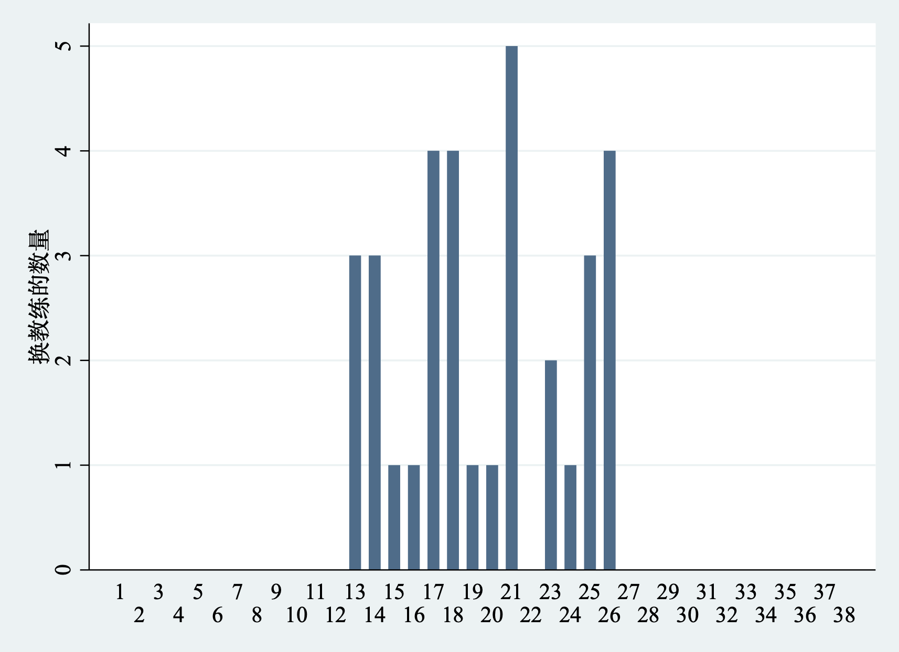
下面，我们来定义事件时间：换了新主帅后的场次为+1，+2，……，+12，换主帅之前的场次为-1，-2，……，-12。由于主帅实在两场比赛之间更换的，因此，没有0这个事件时间。下面来看看更换主帅前后12场比赛的球队得分。
* EVENT TIME
cap drop temp*
gen temp1 = gameno if interv==1
egen temp2 = min(temp1), by(team season )
gen t_event = gameno-temp2
replace t_event = t_event+1 if t_event>=0 & t_event<=38
lab var t_event "Intervention event study time (to -1 before, from +1 after)"
cap drop temp*
* for Stata to define xt panel: team-season
cap drop teamseason
egen teamseason = group(season team )
codebook teamseason
xtset teamseason gameno
xtdes
order teamseason team season gameno date* ///
t_event interv count* points* home*
qui compress
// save "$work/ch24-football-manager.dta",replace
*********************************************************************-
* EVENT STUDY GRAPH, INTERVENTIONS ONLY, BALANCED PANEL ONLY
*********************************************************************-
// use "$work/ch24-football-manager.dta",replace
* keep only interventions and +-12 games
keep if countinterv==1 & t_event>=-12 & t_event<=12
*tab t_event, sum(points)
tab points if t_event==-1
* average points for graph
collapse points, by(t_event)
egen t_event_6 = cut(t_event), at(-12,-6,1,7,13)
* check if we indeed created 4x6-long periods
tabstat t_event, by(t_event_6) s(min max n)
egen points6avg = mean(points), by(t_event_6)
gen p6a_1 = points6avg if t_event>=-12 & t_event<=-7
gen p6a_2 = points6avg if t_event>=-6 & t_event<=-1
gen p6a_3 = points6avg if t_event>=1 & t_event<=6
gen p6a_4 = points6avg if t_event>=7 & t_event<=12
sum p6*
scatter points t_event, mcol(navy*0.8) connect(.) lc(green) lw(thin) ///
|| line p6a_1 p6a_2 p6a_3 p6a_4 t_event, ///
lc(navy*0.8 navy*0.8 navy*0.8 navy*0.8) lw(vthick vthick vthick vthick) legend(off) ///
graphregion(fcolor(white) ifcolor(none)) ///
xlab(-12 -6 -1 1 6 12, grid) xline(0, lw(thick) lp(dash)) ///
ylab(0.0(0.2)1.6, grid) ///
ytitle("平均得分") xtitle("事件时间: 距离换教练的时期数")
从图11.2中可以看出，更换教练前后各12场比赛的平均成绩。-12到-7，-6到-1，1-6，7-12增加了每个赛段的平均分线条，-1和1之间的竖线表示换教练的事件-时间，即左边为换教练前，右边表示换教练后。我们可以从图11.2中看出：（1）在开赛的前六场比赛（-12–7），更换教练的球队平均成绩要低于样本球队的平均成绩；（2）这些球队在-6–1比赛中，成绩会继续下滑；（3）这意味着球队成绩一再下滑会使得管理层考虑更换教练，即成绩越差，越容易发生换教练事件。这个信息对于我们用事件研究来估计效应非常重要。
更换教练后，球队成绩开始回升到英超的平均水平。我们看到了更换教练前球队成绩发生了较大变化，说明了哪支球队会换教练，什么时候换都是内生的，也就是说，球队进入处理组是自我选择的。这也说明，我们仅仅分析处理组球队的得分变化并不能很好地识别出换教练的效应。
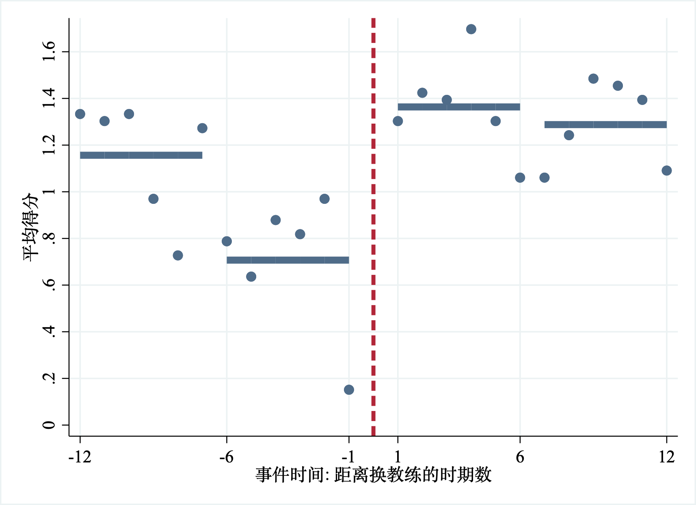
如何挑选面板事件研究中的控制组
我曾经看过一篇文章说，事件研究本质上可以近似为去除了（从未接受处理的）控制组的动态双重差分法（大概是这个意思，希望没有理解错）。但是，我想提醒各位注意的是，这种说法是不准确的，甚至容易误导初学者，让大家以为事件研究设计不能包含从未处理的控制组。上一小节的内容中，事件研究也不包含从未处理的控制组，这是因为在事件研究的最大特征就是重新定义相对事件时间，如果包含了从未处理的控制组，那么，控制组的相对事件时间就不好定义，因为它们从未被处理。
其实，我们很容易解决这个难题：只需要将处理组的初次处理的日历时间当做从未处理的控制组的潜在处理时间即可。如果处理时间交错发生，这可能又是一个问题。实际上，研究者们都是为从未处理的控制组定义一个虚拟/假设的处理：从未处理的控制组的潜在结果y的变化趋势与处理组的实际处理前变化趋势类似的那些时点。
我们再来看看环境认证对污染物排放的影响。我们可能观察到，那些获得认证的企业通常来讲规模比较大，而且在获得环境认证前，可能会减少更多的污染排放，例如，在获得认证的前一年污染排放量大大减少。那么，我们在选择合适的（从未处理）控制组时，就要选择类似的处理前排放趋势——处理前排放量比平均水平要更低，处理前一年的排放量大大下降，类似规模等等。
一旦我们有了合适的控制组，我们就可以分别对处理组和控制组进行事件研究。此时，我们可借助处理个体虚拟变量与处理前后时期的虚拟变量交互项来声明事件研究：
\[\begin{equation} y_{i,t} = \alpha + \beta_0 D_{i0} + \beta_1 D_{i1} + \beta_2 D_{i2} + \gamma_1 D_{i,-1}+\eta treated_i+\sum_0^{s_{max}}\delta_s treated_i \times D_{is}+\sum_{s_{min}}^1 \phi_s treated_i \times D_{i,-s}+\epsilon_{i,t} \end{equation}\]
其中，\(\alpha\)表示未处理个体的平均趋势；\(\beta\)表示未处理个体的处理后平均变化，\(\gamma\)表示未处理个体处理前的变化与趋势之间的差异。\(\eta\)表示处理组和控制组之间趋势的差异。如果控制组选择恰当，处理前的趋势在处理组和控制组之间相同。此外，如果处理后虚拟变量包含了所有的异质性变化时期，那么，总的趋势在保留的事件时间中也是相似的，因此，\(\eta\)应该接近0。\(\delta\)使我们所关注的因果效应，即处理组和控制组之间的处理后的差异，对应于初次处理时点的效应为\(\delta_0\)，处理后第一期的效应为\(\delta_1\)等等。\(\phi\)表示处理组的处理前结果变化。如果控制组选择恰当，这个系数也应该为0，因为它在处理前应该与控制组有相似的变化趋势。
有控制组的例子：英超足球俱乐部教练下课的效应
从图11.2可以看出，球队更换教练后，战绩确实有很大的提升。但是我们也需要注意，在更换教练前，这些球队的成绩就发生了很大的变化（成绩越来越差）。我们需要特别注意，成绩提升可能并不是更换教练带来的作用，也许是前面的比赛不再状态，后面状态有恢复了（即均值回归过程）。如果我们想要更精确地知道更换教练的效应，可能就要找到一个合适的控制组来构造好的反事实：如果球队没有更换教练，它们的成绩会怎样变化？
这个时候，控制组球队需要具有一些特征：（1）赛季中没有更换教练；（2）在虚拟的更换教练时点前，控制组球队的成绩平均变化趋势与处理组球队处理前趋势类似——-12–7的比赛成绩低于所有球队的平均成绩，-6–1比赛成绩进一步下滑，换教练时点的前一场比赛输了。
满足这些标准的控制组有67个。注意，在做这些选择的时候，研究者多多少少还是有一些主观、随意，例如，为什么要选择处理前后各12场比赛，而不是13场？但是，切记，在实践中，我们无论多么的主观随意，都要保持这些选择的透明性，就是让读者知道我们是怎么做的。此外，我们还应该尽可能将其它的一些选择作为稳健性检验，例如，选择前后各13场比赛作为稳健性检验。
我们从图11.3中确实可以看出，选择的控制组与处理组球队在处理前的战绩平均来说比较相似。那么，没有更换教练的这些球队可以用来构造更换教练球队的反事实：即如果没有更换教练，这些球队的成绩可能会是怎样的？从图11.3的处理后，球队成绩来看，控制组和处理组的成绩也差不多，尤其是在处理后的前六场比赛，平均成绩几乎相同。那么，由图的结果可以得出结论：平均来看，更换教练并不能提高球队的战绩。
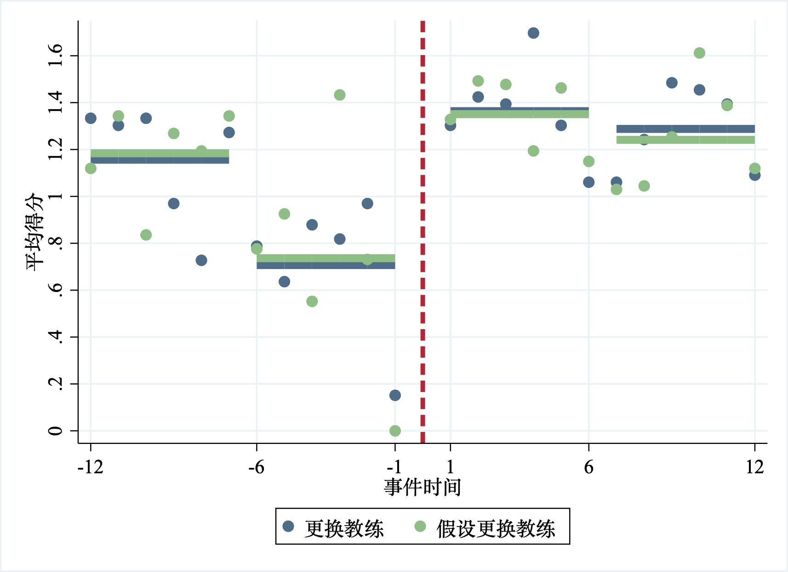
那么，更换教练没有什么用？下面，我们用上述样本来进行回归。回归方程设定为：
\[\begin{equation} y_{i,t}=\beta_0+\beta_1post_{1-6}+\beta_2post_{7-12}+\beta_3 treat_i +\beta_4 treat_i \times post_{1-6}+\beta_5 tread_i \times post_{7-12}+\epsilon_{i,t} \end{equation}\]
其中，\(\beta_4、\beta_5\)就是更换教练的效应。它们分别表示处理组和控制组球队在更换教练后1-6、7-12场次比赛平均成绩的差异。上述回归的stata代码为：
* REGRESSION with 6-game averages
egen t6_event = cut(t_event), at(-12 -6 1 7 13)
tabstat t_event, by(t6_event) s(min max n)
gen treated = countinterv==1
collapse (mean) treated (mean) points6avg = points, by(teamseason t6_event)
egen t=group(t6_event)
xtset teamseason t
gen Dp6avg = points6avg - L.points6avg
gen before_7_12 = t6_event==-12
gen before_1_6 = t6_event==-6
gen after_1_6 = t6_event==1
gen after_7_12 = t6_event==7
gen treatedXbefore_7_12 = treated*before_7_12
gen treatedXbefore_1_6 = treated*before_1_6
gen treatedXafter_1_6 = treated*after_1_6
gen treatedXafter_7_12 = treated*after_7_12
sum Dp6avg before_7_12 after_1_6 after_7_12 treated treatedXbefore_7_12 treatedXafter_1_6 treatedXafter_7_12
* FD REGRESSIONS
lab var after_1_6 "$ post_{1-6} $"
lab var after_7_12 "$ post_{7-12} $"
lab var treated "$ treated $"
lab var treatedXafter_1_6 "$ treated \times post_{1-6} $"
lab var treatedXafter_7_12 "$ treated \times post_{7-12} $"
reg Dp6avg after_1_6 after_7_12 if treated==1 , cluster(teamseason)
// outreg2 using "$output/ch24-table-1-football-manager-reg-Stata.tex", tex(fragment) nonotes se dec(2) 2aster label ctitle("treatment") replace
reg Dp6avg after_1_6 after_7_12 if treated==0 , cluster(teamseason)
// outreg2 using "$output/ch24-table-1-football-manager-reg-Stata.tex", tex(fragment) nonotes se dec(2) 2aster label ctitle("control") append
reg Dp6avg after_1_6 after_7_12 ///
treated treatedXafter_1_6 treatedXafter_7_12 , cluster(teamseason)
// outreg2 using "$output/ch24-table-1-football-manager-reg-Stata.tex", tex(fragment) nonotes se dec(2) 2aster label ctitle("treatment+control") append
* FE REGRESSIONS
xtreg points6avg before_7_12 after_1_6 after_7_12 if treated==1 ///
, fe cluster(teamseason)
xtreg points6avg before_7_12 after_1_6 after_7_12 if treated==0 ///
, fe cluster(teamseason)
xtreg points6avg before_7_12 after_1_6 after_7_12 treatedXbefore_7_12 treatedXafter_1_6 treatedXafter_7_12 , fe cluster(teamseason)从表11.1可以清晰地看到，更换教练的事件发生后，更换教练的球队与未更换教练的球队在战绩上并没有表现出显著的差异。也就是说，更换教练对球队的成绩提升并没有显著的作用。
事件研究图
在当前的经验研究中，研究者们最常用的面板事件研究设计是标准的双向固定效应（TWFE）模型的扩展。我们考察一个事件在t时点，发生在s地区，且不同地区的发生时点可以不同，也可以相同。那么，传统的双向固定效应模型可以表示为：
\[\begin{equation} y_{st}=\alpha+\beta PostEvent_{st}+\mu_s +\lambda_t +X_{st}^{'} \Gamma +\epsilon{st} \end{equation}\]
其中，\(y_{st}\)表示结果变量，\(PostEvent_{st}=1[t\ge Event_s]\)表示地区s发生事件的时点\(Event_s\)之后的所有时期为1。\(\mu_s 、\lambda_t\)分别表示个体固定效应和时间固定效应，\(X_{st}^{'}\)表示可观测的时变协变量。
根据上节内容可知，面板事件研究重新定义了相对事件时间，并可以将上述静态TWFE模型扩展为如下形式：
\[\begin{equation} y_{st}=\alpha+\sum_{j=2}^J \gamma_j Lead_{st}^j +\sum_{k=0}^K \beta_k Lag_{st}^k +\mu_s +\lambda_t +X_{st}^{'} \Gamma +\epsilon{st} \end{equation}\]
其中，我们感兴趣的相对事件时间定义如下：
\[Lead_{st}^j=1[t=Event_s-j], j \in \{1,\cdots,J-1\}\] \[Lead_{st}^J=1[t\le Event_s-J]\] \[Lag_{st}^k=1[t=Event_s+k], k \in \{0,\cdots,K-1\}\] \[Lag_{st}^K=1[t\ge Event_s+K]\]
其它变量与公式（11.5）相同。Leads和Lags变量是二值型虚拟变量，指的是各自对应的地区发生事件前后的时期数。J和K则分别表示事件前后的终点——超过事件前J期和事件后K期的所有时期。需要注意的是，（1）这种面板事件研究的模型声明方式称为捆绑终点时期的面板事件研究（panel event study binned）；（2）在实践研究中，我们可以非常灵活的选择终期J和K，即可以包括所有的事件前时期和时间后时期；（3）在方程（11.6）中，省略掉了\(Lead_1\)，这是为了避免出现多重共线问题，也就是省略了事件发生前一期，这一期也被称为基准期。
事件前后各时期虚拟变量的系数\(\gamma\)和\(\beta\)分别刻画了处理组和控制组的差异，而这种差异主要是相对于基期来说的。例如，忽略的基期效应为0，所以，事件发生后第一期的系数\(\beta_1\)意味着事件发生后一期的效应比事件发生前一期（基期）要高\(\beta_1\)。正如使用传统的TWFE模型一样，许多学者的传统做法（至少2018年以前是这样）认为事件研究的无偏估计只（最主要）依赖于“平行趋势假设”。
因此，相较于静态TWFE模型（11.5），面板事件研究方程（11.6）可以提供两个方面的关键信息：（1）所有的事件前时期系数可以为处理前平行趋势提供一些证据（注意，这并不意味着假设没有事件发生时，处理组和控制组在事件发生后也会以相同的趋势变化）：如果处理组和控制组在事件发生前不满足平行趋势，那么，在事件发生后，更不可能以相同的趋势变化；（2）事件发生后Lags的系数刻画了处理效应的动态特征，例如，处理效应如何随时间变化，效应是暂时还是恒久性的。
在实践中，研究中通常以事件研究图的形式来呈现事件研究结果。在stata中，有很多命令包可以作出事件研究图，我个人特别喜欢两个包：eventdd和xtevent。在stata中安装这两个包：
* 安装eventdd
ssc install eventdd, replace
* 安装xtevent
ssc install xtevent, replace
接下来，我们用两个例子来展示事件研究的过程。第一个例子就是上文的“更换教练的效应”，第二个例子是Stevenson and Wolfers (2006，QJE)的无过错离婚法案对女性自杀率的影响，数据来源于Clarke and Schythe(2020)。
例子1：更换教练的效应
为了估计更换教练对球队成绩的影响，使用Gabor Bekes and Gabor Kezdi（2021）第24章的数据。该数据由2008-2018赛季英超联赛在赛季中更换教练的球队和未更换教练的球队构成。其中，截面个体由球队赛季组成，例如，2008/09赛季的曼联是一个截面个体，而每个赛季的球队又由38场比赛构成。因此，该面板数据由220个球队赛季（teamseason）和38是个时期（gameno）组成。其中，更换教练的个体一共有33个，且在赛季中不同比赛更换。
首先，我们声明一个基准的静态双向固定效应模型TWFE（或者双重差分模型DID）来识别更换教练对球队得分（points）的影响：
\[\begin{equation} piont_{it}=\gamma_i + \lambda_t +\tau D_{it}+epsilon_{it} \end{equation}\]
其中，\(D{it}\)表示更换教练的二值型处理变量，即球队在某场比赛后更换教练则为1，否则为0，而且在当赛季更换教练后的比赛一直为1，即没有退出的情形。\(\gamma_i\)表示球队赛季（teamseason）的个体固定效应，\(\lambda_t\)表示时间固定效应。
在stata中运行上述TWFE回归：
* panel event study using eventdd
* scc install eventdd,replace
* create treatment variable
cap drop D
gen D=0
replace D=1 if t_event>0 & t_event!=.
* TWFE
* ssc install reghdfe,repalce
reghdfe points D,absorb(i.teamseason i.gameno) vce(cluster teamseason)
回归结果如图11.4所示。从TWFE估计量可知，更换教练可以给球队带来0.23分的提升，且在99%置信水平上显著。注意，这个结果应该理解成更换教练的球队相较于未更换教练的球队来说，在更换教练后的剩余比赛中平均得分会提高0.23分。
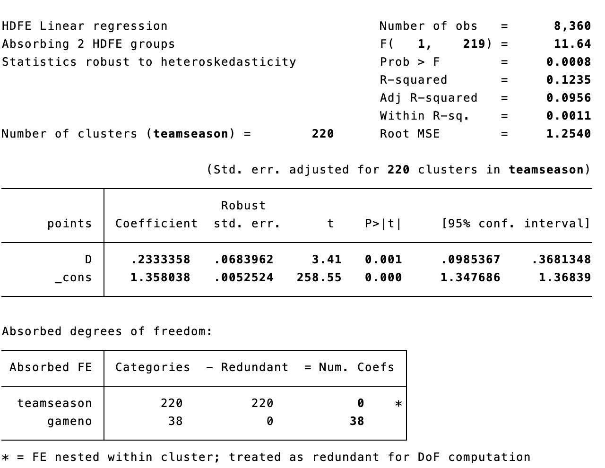
我们回顾一下上一节的结论是，更换教练对球队的成绩没有显著的影响。两个结论的差异可能有几个原因造成：（1）上一节的回归用的六场比赛平均值来进行的回归，而此处的TWFE回归用的全部样本；（2）TWFE方程（11.7）的回归结果还要依赖于“平行趋势假设”，所以我们还要做更多的检验。下面，就用事件研究设计来检验一下：（1）处理前的趋势；（2）处理后的动态效应。
为了用事件研究设计来检验更换教练的效应，首先，我们需要重新定义相对事件时间——更换教练的相对事件变量（\(t_event\)）:
* EVENT TIME
cap drop temp* t_event1 // 删除已经存在的变量名
gen temp1 = gameno if D==1 // 创建一个变量temp1等于所有处理后D==1的场次
egen temp2 = min(temp1), by(team season ) // 创建一个变量temp2等于temp1的最小场次，并按球队-赛季排序，这也是识别出更换教练的第一场比赛
gen t_event1 = gameno-temp2 // 创建相对事件时间，即-1表示更换教练前一场比赛，1表示更换教练后一场比赛等等
lab var t_event1 "Intervention event study time (to -1 before, from +1 after)" // 给相对事件时间加标签
需要注意的是，数据中相对事件时间变量也包含许多缺失值，它们表示赛季中并为更换教练，即从未处理的控制组。
接下来，我们估计面板事件研究方程：
\[\begin{equation} points_{it}=\alpha+\sum_{j=2}^J \gamma_j Lead_{it}^j +\sum_{k=0}^K \beta_k Lag_{it}^k +\mu_s +\lambda_t +\epsilon{it} \end{equation}\]
根据上一节对样本球队的选择，更换教练前后至少要有12场比赛，即从最早更换教练教练的球队来看，其更换教练后最长有25场比赛要打，而从最晚更换教练的球队来看，其在更换教练前已经打了25场比赛，因此，更换教练前后的终点比赛场次分别可以设定为J=K=25。而基期为更换教练前一场比赛。
事件研究的stata命令为：
* event study plot
eventdd points, hdfe absorb(i.teamseason i.gameno) timevar(t_event1) ///
ci(rcap) cluster(teamseason) graph_op(ytitle("事件研究估计量") xlabel(-25(5)25))
由此得到的更换教练对球队战绩效应的事件研究图为：
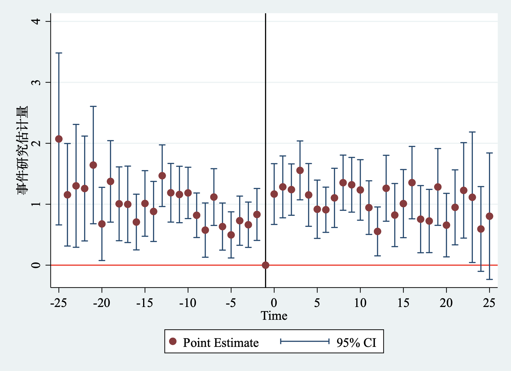
从上述事件研究图11.5可以清晰地看出，（1）基期（更换教练前一期）的效应为0；（2）在更换教练后，每一场比赛的得分变化均为正，且在95%的置信水平下显著；（3）但在更换教练前，几乎每一场比赛的得分变化也在95%的置信水平下显著为正，这说明更换教练前处理组和控制组的变化趋势就存在显著差异，因此，不满足平行趋势假设，那么，我们也可以认为在更换教练后处理组和控制组的变化趋势也不可能相似。也就是说，上面得到的结论“更换教练可以显著提高球队成绩”由于不满足平行趋势假设而不可信。
例子2：无过错(单边)离婚法案对女性自杀率的影响
1969年，时任美国加利福利亚州长里根签署法案允许夫妻在加利福利亚州进行单边离婚——无需另一方的同意，即可结束合法婚姻关系。随后，美国许多州也进行了相似的单边离婚立法。在2006年的时候，人们还对离婚法案的社会、福利效应不甚了解。虽然，也有很多人研究了离婚的人对健康与身体，对妇女的财产状况不利，但这些仅仅只限于离婚与人类幸福的相关关系，而不是人们更加关心的因果关系。为此，Stevenson and Wolfers（2006，QJE）利用不同地区在不同时间实施单边离婚改革来探讨离婚法案改革对自杀率、国内暴力活动以及婚姻谋杀的影响。
许多文献都用Stevenson and Wolfers（2006，QJE）的数据作为例子来说明相应的问题。该数据可在Clarke and Schythe(2020)下载。这套数据由美国49个州1964-1996年的平衡面板构成。且作者用不同州在不同时间实施改革的自然变动来估计单边离婚法案改革对自杀率、国内暴力和婚姻谋杀的影响。因此，采用包含州和时间固定效应的TWFE模型。而改革的虚拟变量\(D_{it}\)指的是一个州i在时期t是否实施了单边离婚法案，实施了法案就为1，否则为0。那么，基准的TWFE DID模型可声明如下：
\[\begin{equation} asmrs_{it}=\gamma_i+\lambda_t+\tau D_{it}+X^{'}_{it}\Gamma+\epsilon_{it} \end{equation}\]
其中，\(asmrs_{it}\)表示i州t年的女性自杀率，\(\gamma_i、\lambda_t\)分别表示州和时间固定效应。\(\epsilon_{it}\)表示随机误差项。\(X^{'}_{it}\)控制变量包括人均收入（\(pcinc\)）、谋杀死亡人数（\(asmrh\)）、有孩子家庭的补助（\(cases\)）。处理变量\(D_{it}\)前面的系数\(\tau\)就是核心参数，它刻画了单边离婚法案对女性自杀率的平均处理效应。首先，我们来看看静态TWFE DID估计量，stata代码如下：
* using bacon_example.dta
use "/Users/xuwenli/Library/CloudStorage/OneDrive-个人/0paper/132事件研究的黑箱：从DID到事件研究导读与实践建议/data and code/bacon_example.dta", clear
* TWFE DID，其中，post表示处理变量
*（1）不聚类
reghdfe asmrs post,absorb(stfips year)
*（2）稳健标准误
reghdfe asmrs post,absorb(stfips year) vce(cluster stfips)
*（3）带协变量
reghdfe asmrs post pcinc asmrh cases,absorb(stfips year) vce(cluster stfips)
上述回归结果如表11.2所示：
从表11.2的结果来看，（1）列表示没有协变量，不聚类情形，其TWFE估计量显著为负，但（2）列表示聚类稳健标准误情形7，回归结果就不显著，而在（3）列中加入协变量后，回归结果仍然不显著。这是否说明，美国进行的单边离婚法案改革对女性自杀率没有显著的影响呢？这倒也不一定，因为根据第八章“DID”，在交叠处理情形下（各州在不同时间实施单边离婚法案），TWFE DID可能存在偏误。因此，很多学者都建议使用面板事件研究。下面，我们就来看看面板事件研究图。
为了估计单边离婚法案效应的面板事件研究模型，首先要重新定义每个地区改革的相对事件时间变量（如果样本数据中没有这个变量的话）。在我们使用的样本数据中，有各地区单边离婚法案实施的年份(\(\_nfd\))，也有日历时间变量(\(year\))，因此，在stata中定义“相对事件时间”（\(time\_to\_treat\)）等于日历时间减去法案实施时间：
* Event Study plot
* create the lag/lead for treated states
g time_to_treat = year - _nfd // _nfd: No-fault divorce onset
接下来，我们就可以利用stata包\(eventdd\)来估计如下面板事件研究模型：
接下来，我们估计面板事件研究方程：
\[\begin{equation} asmrs_{it}=\alpha+\sum_{j=2}^J \gamma_j Lead_{it}^j +\sum_{k=0}^K \beta_k Lag_{it}^k +X^{'}_{it}\Gamma+ \mu_s +\lambda_t +\epsilon{it} \end{equation}\]
其中，\(asmrs_{it}\)仍然表示i地区t年的女性自杀率；由样本数据可知，在样本中最早实施单边离婚法案的地区的实施年份为1971年，也就是说，实施该法案后的相对事件时间最长可以达到27年，即\(K=27\)，而最晚实施的年份为1985年，即实施前最大时期数为\(J=21\)。按照标准实践做法，忽略\(j=-1\)，即每个地区法案实施前一年作为基期。\(\gamma、\beta\)是我们感兴趣的参数。
* without coviates
eventdd asmrs i.year i.stfips, timevar(time_to_treat) ///
ci(rcap) cluster(stfips) graph_op(ytitle("每百万女性自杀人数") xtitle("相对事件时间") xlabel(-20(5)25))
* with coviates
eventdd asmrs pcinc asmrh cases i.year i.stfips, timevar(time_to_treat) ci(rcap) cluster(stfips) graph_op(ytitle("每百万女性自杀人数") xtitle("相对事件时间") xlabel(-20(5)25))
从事件研究图11.6可以看出，（1）单边离婚法案对女性自杀率有显著的负向效应，实施该法案后的第九年（相对事件时间为8）在95%的置信水平下显著为负，即该法案实施后的第9年，相对于该法案实施的前一年会减少每百万女性中9人自杀，且在95%的置信水平上显著；（2）再看看事件研究图的处理前趋势，在单边离婚法案实施前，大多数时期的系数均在95%置信水平下不显著，这说明没有统计证据显示实施该法案的地区和未实施该法案的地区在改革前的变化趋势具有差异。这可以认为处理前处理组和控制组满足平行趋势。
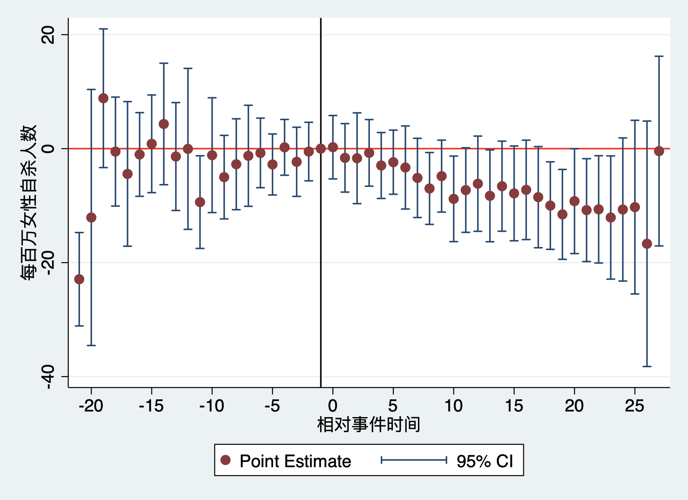
有三件事需要注意：第一，处理后，在95%置信水平下仍然显著的单期系数较少，我们仍可下结论“该法案可以显著降低女性自杀率”，这是因为事件研究中的单期系数均为样本中的单期数据得到，这样就使得估计系数的样本量大幅下降，因此，系数的准确性下降很自然，而处理后的单期系数实际上是相对于处理前一期（基期）的效应变化，因此，仍可以得到上述结论；（2）处理前趋势检验，即处理前时期的单期系数中少数在95%置信水平下显著，从实践来看，这并不影响处理前趋势的结论，因为在单边离婚法案的例子中，显著的处理前系数均离事件时间较远，也就是说，这时的样本数据可能更少，所以误差较大，因此，从实践角度来看，我们应该重点关注离事件发生时点越近的这些系数的显著性和变化趋势；（3）从理论上说，处理前趋势应该检验的是所有处理前系数都等于0的联合检验，但实践中，大部分学者都只关注单一系数（Roth，2022：AER Insights）。
当然，我们也可以正式检验处理前系数均为0的联合显著性假设：
\[H_0: \gamma_{21}= \cdots = \gamma_2=0 vs. H_1: H_0 不成立\]
我们可以使用stata命令test来检验上述假设：
* test the joint significance of all the leads terms simultaneously
* 需要注意的是，在eventdd输出的结果中，lag表示处理前的变量，而leads表示处理后的变量，这与我们通常在事件研究声明中看到的符号相反；
test lag21 lag20 lag19 lag18 lag17 lag16 lag15 lag14 lag13 lag12 lag11 lag10 lag9 lag8 lag7 lag6 lag5 lag4 lag3 lag2
由此，我们可以得到一个联合检验的F统计量和显著性水平。
面板事件研究的最新进展8
同质性处理效应假设
在经济学领域，最近十年增长最快的基于设计的研究方法就是“事件研究（event study）”，在NBER和Top-5期刊上的论文占比均超过6%。随着时间的推移，事件研究与双重差分联系越来越紧密，因为在应用经济学研究中，双重差分法几乎总是与事件研究法结合在一起来识别因果效应（Currie et al.，2020） 。
从第八章关于双重差分的最新理论计量文献来看，在某些情形下，基于传统的双向固定效应（TWFE）模型得到的估计量可能存在较为严重的偏误（de Chaisemartin and D’Haultfoeuille，2020；Goodman-Bacon，2021； Callaway and Sant’Anna，2021）。为了解决这些偏误问题，一些学者提出用DID事件研究法（DID Event Study）来避免这个偏误（Goodman-Bacon，2021；黄炜等，2022）。正如Goodman-Bacon（2019，SO YOU’VE BEEN TOLD TO DO MY DIFFERENCE-IN-DIFFERENCES THING: A GUIDE ）给出的建议：我们可以换一种方式来呈现结果——事件研究。在回答“我应该做事件研究吗？”问题时，他也给出“是的，在许多情形下，事件研究是对的，且你能相信扁平的处理前效应以及清晰地处理后变化。当你有大量的未处理组个体时，事件研究尤其可信，因为这时给予‘有问题’\(2 \times 2\) DIDs——用已处理的个体作为控制组——的权重较小。
但是，事件研究法真的可以解决传统静态TWFE估计量的偏误吗？如果是，那么，我们可以估计动态回归来避免这些问题，即上述面板事件研究。但是，正如Goodman-bacon（2019）指出，许多情形下，事件研究是对的。言外之意就是，还存在另一些情形，传统面板事件研究并不能得到准确的平均处理效应。Callaway and Sant’Anna（2021，JoE）指出，即使处理组群/类之间的动态处理效应是同质的，有些动态TWFE估计量仍然会存在严重偏误。且Sun and Abraham（2020，JoE）的研究显示，在异质性处理效应的动态模型设定中，处理前和后指标的系数也会存在偏误。 而Simon Freyaldenhoven, Christian Hansen, Jorge Pérez Pérez, and Jesse M. Shapiro（2021）则更加详细地考察了面板事件研究的识别假设，尤其是对不可观测的混淆因子的讨论。下面，我们就来看看这些关于面板事件研究的识别假设，及假设不满足带来的估计量偏误，以及一些实践中的建议。
在“宏观研学会”微信公众号中，我已经给出了几篇关于事件研究的推文，例如，【应用计量系列41】从DID到事件研究（一）：三幕剧构成一台戏、【应用计量系列42】从DID到事件研究（二）：模拟数据的应用。也可以在我的工作论文《事件研究的秘密：从DID到面板事件研究导读》中看到更加详细的阐述，包括更多的稳健事件研究图和一些已经发表的论文案例应用等。
面板固定效应估计量非常有趣，因为它可以消除某些不可观测异质性偏误（混合OLS模型中存在）。当这些不可观测的异质性丢入不可观测的误差项——由结构误差项和异质性本身构成，它就会导致处理变量变成内生的。即使异质性与处理变量相关，只要是时间不变的，固定效应就可以消除它。即只要误差项与因变量不存在系统相关，固定效应估计量就是一致的，因此，被称为”严格外生性“。
在DID设计中，我们通常根据一个政策是否是内生地采用/实施的来考察严格外生性。可能由于不可观测的不平等趋势，一个地区才通过最低工资政策，以缓解不平等。那么，在这种情形下，我们该如何考察可能存在违反严格外生性所带来的问题呢？我的想法是转换到潜在结果框架，并从另一个角度来思考这个问题——严格外生性可能是描述平行趋势的另一种方式？也就是说，长期以来，我都认为”严格外生性意味着平行趋势“，因此，我们在做研究时，要花大量的笔墨去更好地理解我们给出的平行趋势的证据。
但是，现在，我知道了严格外生性是一个更有意义的假设，它的含义比平行趋势更宽广。即严格外生性也排除了当处理效应异质性和政策交叠采用时可能出现的一些问题（参见【应用计量系列35】工作论文：交叠的秘密：经济学研究领域的交叠DID导读）。我现在知道了异质性也会打破严格外生性，并不是因为它违反了”平行趋势“，而是因为其它一些原因。学习这些会让人更安心，因为这些问题没有在TWFE中出现，这些问题总是困扰着我，我对交叠采用的不完全理解也与严格外生性相关。
下面，用John Gardner（2021，2-stage DID）文章里的概念来讨论违反严格外生性的问题。考虑下列模型：
\[\begin{equation} Y_{gp,it}=\beta_{gp}X_{gp}+\lambda_{g}+\lambda_p+\epsilon_{gp,it} \end{equation}\]
其中，g表示组群，p表示时期。我们感兴趣的是平均处理效应（ATT）（Callaway & Sant’Anna，2020），也就是与X的系数等价：
\[\begin{equation} \beta_{gp}=E(Y_{gp,it}^1-Y_{gp,it}^0| g,p) \end{equation}\]
如果实施政策的时点，引入了异质性，即偏离平均处理效应，那么，我们可以重写潜在结果模型，取期望，得到下列表达式：
\[\begin{equation} E(Y_{gp,it} |g,p,X_{gp})=E[\beta_{gp}|X_{gp}=1]X_{gp}+\lambda_{g}+\lambda_p+(\beta_{gp}-E[\beta_{gp}|X_{gp}=1]X_{gp}) \end{equation}\]
Gardner称第一项为总的平均ATT——可以理解成每个组群ATT的平均。最后一项就是新的误差项，基于g、p、组群和时间可变的X下，新误差项并不必然为零。事实上，如果所有组群的ATT相同或者只有一个处理组（例如，没有交叠处理），TWFE仅能识别这个“总的平均ATT”。这意味着，在异质性和交叠处理下，严格外生性并不满足，因为结构性误差项（新误差项）最终会与处理变量和组群固定效应相关。这并不是什么新鲜事，计量入门时就学过了。只是在交叠和异质性情形可能对于大家很陌生。
本节将显示，严格外生性的违反并不是仅仅出现在静态参数里。它也会出现在TWFE事件研究系数中。虽然假设同质性可以给我们无偏估计，但是一旦同质性假设不成立，估计量就是有偏的。异质性让这个世界变得很有趣，但它也让因果效应估计变得更具挑战性，至少，目前是这样。
如Sun & Abraham（2020，JoE）所言，处理前后指标系数的TWFE估计量会被处理前后的其它信息所干扰（或污染），除非我们严格限制异质性，并施加一些诸如平行趋势和有限预期处理效应的假设。但真奇怪，处理前后指标系数的污染表示有来自于其它时期处理效应的存在。因此，DID设计中许多传统的检验——例如，处理前时期的联合显著性检验（译者注：理论上，应该是联合显著性检验，但是实践中，大部分人都只做了单一时期的显著性检验，参见Roth（2022，AER Insights））——可能得到错误的结论。即是说，处理前趋势检验结果显示平衡性（真实情况是非平衡），或者结果显示非平衡（真实情况是平衡的），这些错误的结果均是由于某些关键的假设不成立。
Sun & Abraham（2020，JoE）原文的概念非常的紧凑，大家可以去看看原文。提醒大家注意上标和下标，还有一些一般性概念标识，E表示个体的“处理时间”。小写字母l表示“相对时间指标”，用于表示相对时期，例如t-1，t+3。小写字母e对应于“类”——它们有相同的处理时间E。Callaway and Sant’Anna称同一处理时间的个体为“组群”，两篇文章中，这个概念是同一个东西。g表示a bin which is the imposing of balance in relative time by “shoving” all imbalanced leads and lags into a single lead and lag, respectively.
结合Goodman-Bacon（2021，JoE）和Callaway and Sant’Anna（2021，JoE），可以帮助我们理解Sun & Abraham（2020，JoE），因为Goodman-Bacon（2021，JoE）给出了TWFE的分解（参见【应用计量系列27】交叠DID中TWFE估计量会出什么问题？），Callaway and Sant’Anna（2021，JoE）则提供了一个稳健的估计量（参见【应用计量系列35】工作论文：交叠的秘密：经济学研究领域的交叠DID导读）。与Goodman-Bacon（2021，JoE）不同，Sun & Abraham（2020，JoE）的分析聚焦在事件研究的“动态”设定方面。而Callaway and Sant’Anna（2021，JoE）则提出了一种稳健的估计量，估计组群-事件ATT，然后用于估计处理前后时期指标的系数。因此，Callaway and Sant’Anna（2021，JoE）和Sun & Abraham（2020，JoE）的估计量最终看起来比较类似。实际上，Sun & Abraham（2020，JoE）估计量是Callaway and Sant’Anna（2021，JoE）的特例。
上述研究者称其目标参数为“类别平均处理效应（cohort average treatment effect on the treatment group）”，或者简写成CATT。表达式为：
\[\begin{equation} CATT_{e,l}=E[Y_{i,e+l}-Y_{i,e+l}^\infty | E_i=e] \end{equation}\]
中括号中的第二项带有无穷上标的概念表示没有处理的个体i的潜在结果。我们已经定义了组群e和相对时间l的类ATT。在估计这个核心参数时，需要满足下列三个假设。
假设 1：平行趋势。平行趋势对于所有组群都成立。
这个假设就是大家通常理解的意思。因此，我不会过多去说明它。但是我在这提醒大家注意下事情。作者们做了非常有趣的让步：如果你认为平行趋势对于一个组群来说不成立，那么，你应该将其排除在分析之外。
假设 2：无处理预期。
没有预期意味着在处理前时期CATT=0。如果个体理性的预期到处理将会发生，他们可能会改变行为，从而违反这个假设，提前采取行动就会改变潜在结果。
假设 3：处理效应同质性。每个组群有相同的处理效应。
假设3并不要求处理效应在时间上是恒定的，这一点与Goodman-Bacon（2021，JoE）不同。但是，它要求对于所有的类都有相同的处理情况。换言之，假设3假设无论是静态还是动态环境下，所有的组群都有相同的处理情况。
我们考察一个TWFE 事件研究回归模型：
\[\begin{equation} Y_{it}=\alpha_i+\lambda_t+\sum_{j=2}^J \gamma_j Lead_{it}^j +\sum_{k=0}^K \beta_k Lag_{it}^k +\epsilon_{it} \end{equation}\]
Sun & Abraham（2020，JoE）说，你需要从动态模型设定中排除一些相对时期，我惊讶的是，你需要至少排除两期来避免多重共线问题。因此，他们建议舍弃两个相对时期指标，例如t-1和其它一些时期。
交叠下的动态模型设定的一个有趣特征是数据集变成了相对事件事件上的非平衡数据（即使在日历事件上是非常标准的平衡面板）。在一个10年期的面板中，组群1在第3年处理，组群2在第7年处理，两个组群都有3期处理前的时期，但只有第2组群有3+以上的处理前时期。类似的，两组都有3期处理后的时期，但只有第1组有3+以上的处理后时期。因此，即使两个组群在日历时间上式平衡的，它们在相对时间上也是非平衡的。
因此，实践中常用的方法是要么舍弃所有的3+处理前时期和3+处理后时期，要么“捆绑”这些数据以使得所有3+处理前时期都整合进单一的3+处理前“时期束”，同理也是对3+处理后时期类似操作。每一种实践操作都会平衡相对时间中的面板数据。而且，在TWFE设定下，舍弃一些数据具有一些优点：舍弃超范围的处理前和处理后时期可以消除总体回归系数中对其它处理前和处理后系数的影响。因为动态回归设定中的总体回归系数偏误源自于其它相对时期的处理效应的存在，舍弃这些相对时期就可以减轻这些偏误，但是不能仅仅依靠舍弃这些来自于总体回归系数的信息来消除所有的干扰（污染）。
正如前文所述，SA的分解显示了关于动态回归设定中处理期和处理后指标系数估计量的令人惊奇的信息。下面来看看论文里的一些命题。
命题1：相对面板束g的总体回归系数是一些趋势差分的线性组合，这些趋势来源于（1）自身的相对时期，（2）动态回归中其它时期束的相对时期，（3）排除在动态回归之外的相对时期。
命题2：只有平行趋势成立时。只有平行趋势成立时，时期束指标的总体回归系数是自身相对时期的CATT和其它相对时期CATT的线性组合。
平行趋势假设对于识别是必要条件，但是并不像我们通常认为的，它并不是充分条件。如果仅仅只有平行趋势成立，总体回归系数变成了源自于其它时期的组群平均处理效应的加权和——既有包含中动态回归中的时期，也有排除的时期。这就是SA所称的“系数污染”。
命题3：平行趋势和无处理预期成立。如果你的平行趋势成立，组群也不存在预期处理行为，那么，任何给定时期束g的总体回归系数就是对所有处理后时期的类ATT的线性组合。
无预期行为——必须具体政策具体讨论——的一个优势就是它消除了总体回归系数中的一些污染。无预期必然意味着对于所有处理前时期指标，类ATT=0。
但是仅仅因为不存在预期，仅仅因为对于所有的处理前趋势CATT=0，并不意味着对处理前时期指标的总体回归系数就为0。根据定理1，系数是三项的加权和，而自身相对时期的CATT只是这三项其中之一。
命题4：平行趋势和处理效应同质性。如果平行趋势成立，且组群都有相同的处理效应，那么，对于任何组群e来说，CATT就是ATT。因此，这意味着总体回归系数等于自身相对时期和其它相对时期ATT的线性组合。
我们再次看到即使平行趋势和处理效应同质性假设成立，总体回归系数仍然存在污染。这是因为系数是三项的加权和，而不是两项。只有我们的三个假设——平行趋势、无预期、处理效应同质性——都成立时，处理前和处理后时期指标的总体回归系数才等于特定相对时期的ATT。
为什么我们要关心这个偏误？可能最严重的问题就是估计量的污染导致了处理前趋势检验无效。（1）如果处理前时期的系数包含了污染信息（其它时期的处理效应），那么，处理前趋势检验可能通不过（实际上是可以通过的）。实际上，即使平行趋势和无预期假设成立，检验仍然可能通不过（例如，处理前系数显著）。只有三个假设同时满足时，污染信息才会被消除。
下面，我们用模拟数据来看看传统在不满足同质性处理效应假设时，TWFE事件研究存在的偏误。该例子的代码来源于Pietro Santoleri，并有适当修改。我们考察交叠处理的情形，模拟数据由400个个体，15期构成面板数据。我们按照（0，1）的均匀分布来随机配置处理，且随机配置的处理时期为10-16期（注意，16期以后所有的个体都受到处理，所以只设置15期的面板数据）。
Y表示结果变量，D表示二值型处理变量。我们设置的数据生成过程（DGP）为：
\[Y_{it}=i+3 \times t +\tau D_{it} +\epsilon_{it}\]
其中，\(i\)表示个体固定效应，\(t\)表示时间固定效应（或者时间趋势），\(\epsilon_{it}\)表示随机误差项，\(\tau\)表示时间上的异质性处理效应： \[\tau = \begin{cases} t-12.5 &, D=1 \\ 0&, D=0 \end{cases}\]
从上述DGP可以看出，在处理前，处理效应为0，在处理发生后，处理效应随时间变化而变化，例如，如果在第13期开始接受处理，那么，13期的处理效应就为0.5，14期开始接受处理，处理效应为1.5，以此类推。
上述DGP的stata代码为：
// written by Pietro Santoleri，extended by Wenli Xu
// Generate a complete panel of 400 units observed in 15 periods
clear all
timer clear
set seed 10
global T = 15
global I = 400
set obs `=$I*$T'
gen i = int((_n-1)/$T )+1 // unit id
gen t = mod((_n-1),$T )+1 // calendar period
tsset i t
// Randomly generate treatment rollout periods uniformly across Ei=10..16
// (note that periods t>=16 would not be useful since all units are treated by then)
*Period when unit is first treated
gen Ei = ceil(runiform()*7)+$T -6 if t==1
bys i (t): replace Ei = Ei[1]
*Relative time, i.e. number of periods since treated (could be missing if never treated)
gen K = t-Ei
*Treatment indicator
gen D = K>=0 \& Ei!=.
// Generate the outcome with parallel trends and heterogeneous treatment effects
*Heterogeneous treatment effects (in this case vary over calendar periods)
gen tau = cond(D==1, (t-12.5), 0)
*Error term
gen eps = rnormal()
*Outcome (FEs play no role since all methods control for them)
gen Y = i + 3*t + tau*D + eps
上述DGP可以清晰地看出，处理效应存在动态异质性。有几个重要的特征需要注意：
、该面板数据在每一期都满足平行趋势，因为在没有处理D=0时，处理效应也等于0。结果变量只按照个体和时间的线性函数来增长。因此，结果变量满足平行趋势。
、该数据也满足DID研究设计的另一个假设——无处理预期。即是说，如果t期没有处理发生，那么，在t-k到t期内处理效应为0。换句话说，不会由于前看（looking forward）代理人预期到未来会发生处理而提前显现处理效应。如果预期效应发生，那么，处理效应就和我们所知的有所不同了（参见Lucas批判）。从上述DGP来看，每个个体在处理前的所有时期，都没有出现处理效应。这就意味着无处理预期。
、 最后一个假设是同质性处理效应。从D==1时，tau=t-12.5可以看出，处理效应随时间而不断增长。当然，这并不是唯一的异质性处理效应，还有就是处理效应在个体之间也存在差异。而从上文可知，异质性处理效应会使得事件研究出现偏误。
下面，用上述模拟数据，使用TWFE事件研究图来看看TWFE事件研究的偏误问题。真实动态处理效应、动态TWFE估计量的stata代码如下：
// 构造真实处理效应的动态系数
matrix btrue = J(1,6,.)
matrix colnames btrue = tau0 tau1 tau2 tau3 tau4 tau5
qui forvalues h = 0/5 {
sum tau if K==`h'
matrix btrue[1,`h'+1]=r(mean)
}
// 动态TWFE估计量
reghdfe Y F*event L*event, absorb(i t) vce(cluster i)
* 储存结果，以便后面作事件研究图
estimates store ols
// Combine all plots using the stored estimates (14 leads and lags around event)
event_plot btrue# ols, ///
stub_lag(tau# L#event) stub_lead(pre# F#event) ///
plottype(scatter) ciplottype(rcap) ///
together perturb(-0.325(0.1)0.325) trimlead(14) noautolegend ///
graph_opt(title("模拟数据 (400个体, 15期)，面板事件研究估计量", size(med)) ///
xtitle("事件相对时间", size(small)) ytitle("平均处理效应", size(small)) xlabel(-14(1)5) ///
legend(order(1 "真实效应" 2 "TWFE估计量") rows(1) position(6) region(style(none))) ///
/// the following lines replace default_look with something more elaborate
xline(-0.5, lcolor(gs8) lpattern(dash)) yline(0, lcolor(gs8)) graphregion(color(white)) bgcolor(white) ylabel(, angle(horizontal)) ///
) ///
lag_opt1(msymbol(+) color(black)) lag_ci_opt1(color(black)) ///
lag_opt5(msymbol(Sh) color(dkorange)) lag_ci_opt5(color(dkorange))
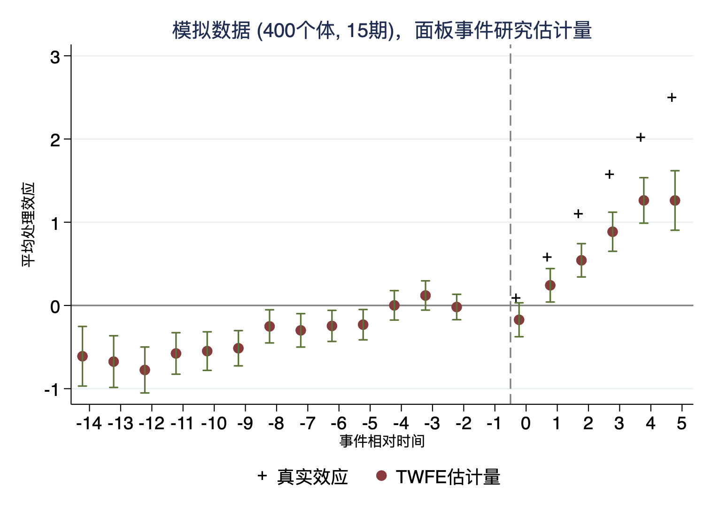
上图显示这些TWFE的事件研究图与真实处理效应之间存在较大的差异而且，正如学者们常用的，用处理前时期的单一系数估计量来作为“处理前趋势检验”（包括平行趋势和无预期）的证据（Roth，2022）。那么，从上图可以清晰地看出，TWFE的事件研究图显示，处理前时期的大部分系数在95%的置信水平上显著，且表现出明显的逐渐靠近0的趋势。如果根据TWFE事件研究图，我们可能会很郁闷，因为“平行趋势“和”无预期“假设可能都不满足，那么，我们处理后的处理效应不可信。
真的是这样的吗？很明不是的，因为我们的DGP已经明确给出处理前时期的处理效应tau=0。因此，上述TWFE的事件研究图给出的证据存在严重的问题。可能不仅仅是对处理前趋势检验（关于事件研究用来作为”处理前趋势“检验的问题，更加详细信息可以参见Roth（2022，AER:Insights）），处理后的处理效应可能也会存在偏误。
Sun & Abraham（2020，JoE）提醒我们，DID越来越流行部分是因为面板数据越来越多。因此，使用事件研究很常见。但是，在没有任何修正的情况下使用TWFE会产生偏误，即使使用DID 事件研究也是一样的。下面，用Sun and Abraham（2020）提出的稳健估计量来修正可能存在的TWFE事件研究估计量偏误。
// SA估计量
* 准备阶段
sum Ei
gen lastcohort = Ei==r(max) // dummy for the latest- or never-treated cohort
forvalues l = 0/5 {
gen L`l'event = K==`l'
}
forvalues l = 1/14 {
gen F`l'event = K==-`l'
}
drop F1event // normalize K=-1 (and also K=-15) to zero
* 估计
eventstudyinteract Y L*event F*event, vce(cluster i) absorb(i t) cohort(Ei) control_cohort(lastcohort)
// Y: outcome variable
// L*event: lags to include
// F*event: leads to include
// vce(): options for variance-covariance matrix (cluster SE)
// absorb(): absorb unit and time fixed effects
// cohort(): variable for unit-specific treatment date (never-treated: Ei == missing)
// control_cohort(): indicator variable for control cohort (either latest-treated or never-treated unit
* 储存结果，以便后面作事件研究图
matrix sa_b = e(b_iw)
matrix sa_v = e(V_iw)
// Combine all plots using the stored estimates (14 leads and lags around event)
event_plot btrue# sa_b#sa_v ols, ///
stub_lag(tau# L#event L#event) stub_lead(pre# F#event F#event) ///
plottype(scatter) ciplottype(rcap) ///
together perturb(-0.325(0.1)0.325) trimlead(14) noautolegend ///
graph_opt(title("模拟数据 (400个体, 15期)，面板事件研究估计量", size(med)) ///
xtitle("事件相对时间", size(small)) ytitle("平均处理效应", size(small)) xlabel(-14(1)5) ///
legend(order(1 "真实效应" 2 "Sun-Abraham估计量" 4 "TWFE估计量") rows(1) position(6) region(style(none))) ///
/// the following lines replace default_look with something more elaborate
xline(-0.5, lcolor(gs8) lpattern(dash)) yline(0, lcolor(gs8)) graphregion(color(white)) bgcolor(white) ylabel(, angle(horizontal)) ///
) ///
lag_opt1(msymbol(+) color(black)) lag_ci_opt1(color(black)) ///
lag_opt5(msymbol(Sh) color(dkorange)) lag_ci_opt5(color(dkorange)) ///
lag_opt8(msymbol(Oh) color(purple)) lag_ci_opt8(color(purple))
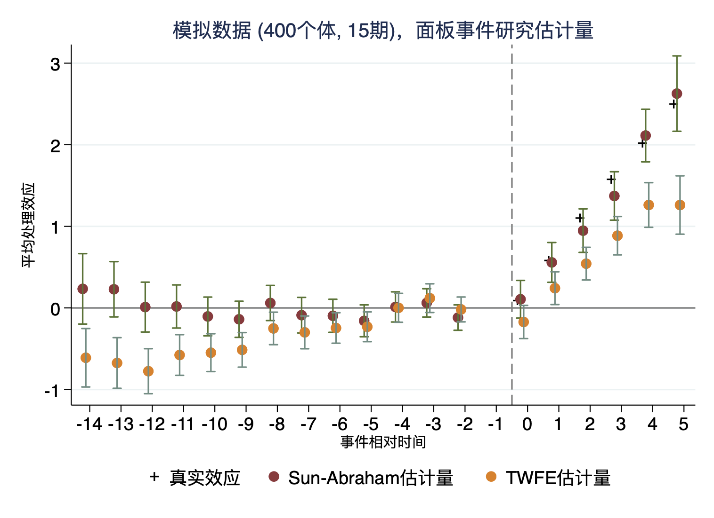
从图中可以看出，SA方法的事件研究图在处理前估计量均不显著，处理后的效应也比较接近真实处理效应。
需要注意的是，除了Sun & Abraham（2020，JoE）提出的解决方案，还有很多其它的稳健事件研究估计量。参见【应用计量系列35】工作论文：交叠的秘密：经济学研究领域的交叠DID导读
例子：无过错(单边)离婚法案对女性自杀率的影响
我们在回顾一下上一节的“单边离婚法案对女性自杀率的影响”。在传统的TWFE事件研究中，我们得到的结论是：单边离婚法案的实施可以显著降低女性自杀率，而且处理前的处理组和控制组满足平行趋势假设。我们也知道，单边离婚法案在美国不同地区实施的时间也不同，因此属于交叠采用的政策，这种情况下，非常有可能存在异质性处理效应，即不满足处理效应同质性假设。那么，使用上述TWFE事件研究估计量就可能得到有偏的估计结果。下面，我们用SA提出的稳健方法来估计面板事件研究方程：
\[\begin{equation} asmrs_{it}=\alpha+\sum_{j=2}^J \gamma_j Lead_{it}^j +\sum_{k=0}^K \beta_k Lag_{it}^k +X^{'}_{it}\Gamma+ \mu_s +\lambda_t +\epsilon{it} \end{equation}\]
其中，\(asmrs_{it}\)仍然表示i地区t年的女性自杀率；由样本数据可知，在样本中最早实施单边离婚法案的地区的实施年份为1971年，也就是说，实施该法案后的相对事件时间最长可以达到27年，即\(K=27\)，而最晚实施的年份为1985年，即实施前最大时期数为\(J=21\)。按照标准实践做法，忽略\(j=-1\)，即每个地区法案实施前一年作为基期。\(\gamma、\beta\)是我们感兴趣的参数。
* written by Wenli Xu
use "/Users/xuwenli/Library/CloudStorage/OneDrive-个人/0paper/132事件研究的黑箱：从DID到事件研究导读与实践建议/data and code/bacon_example.dta", clear
* Event Study plot
* create the lag/lead for treated states
* fill in control obs with 0
* This allows for the interaction between `treat` and `time_to_treat` to occur for each state.
* Otherwise, there may be some NAs and the estimations will be off.
g time_to_treat = year - _nfd // _nfd: No-fault divorce onset
replace time_to_treat = 0 if missing(_nfd)
* this will determine the difference
* btw controls and treated states
g treat = !missing(_nfd)
g never_treat = missing(_nfd)
* Sun \& Abraham(2020,JoE)
* Create relative-time indicators for treated groups by hand
* ignore distant leads and lags due to lack of observations
* (note this assumes any effects outside these leads/lags is 0)
tab time_to_treat
forvalues t = -9(1)16 {
if `t' < -1 {
local tname = abs(`t')
g g_m`tname' = time_to_treat == `t'
}
else if `t' >= 0 {
g g_`t' = time_to_treat == `t'
}
}
eventstudyinteract asmrs g_*, cohort(_nfd) control_cohort(never_treat) covariates(pcinc asmrh cases) absorb(i.stfips i.year) vce(cluster stfips)
* Get effects and plot
* as of this writing, the coefficient matrix is unlabeled and so we can't do _b[] and _se[]
* instead we'll work with the results table
matrix T = r(table)
g coef = 0 if time_to_treat == -1
g se = 0 if time_to_treat == -1
forvalues t = -9(1)16 {
if `t' < -1 {
local tname = abs(`t')
replace coef = T[1,colnumb(T,"g_m`tname'")] if time_to_treat == `t'
replace se = T[2,colnumb(T,"g_m`tname'")] if time_to_treat == `t'
}
else if `t' >= 0 {
replace coef = T[1,colnumb(T,"g_`t'")] if time_to_treat == `t'
replace se = T[2,colnumb(T,"g_`t'")] if time_to_treat == `t'
}
}
* Make confidence intervals
g ci_top = coef+1.96*se
g ci_bottom = coef - 1.96*se
keep time_to_treat coef se ci_*
duplicates drop
sort time_to_treat
keep if inrange(time_to_treat, -9, 16)
* Create connected scatterplot of coefficients
* with CIs included with rcap
* and a line at 0 both horizontally and vertically
summ ci_top
local top_range = r(max)
summ ci_bottom
local bottom_range = r(min)
twoway (sc coef time_to_treat, connect(line)) ///
(rcap ci_top ci_bottom time_to_treat) ///
(function y = 0, range(time_to_treat)) ///
(function y = 0, range(`bottom_range' `top_range') horiz), ///
xtitle("相对事件时间") ytitle("SA(2020)估计量") legend(order(1 "系数" 2 "95\% 置信区间"))
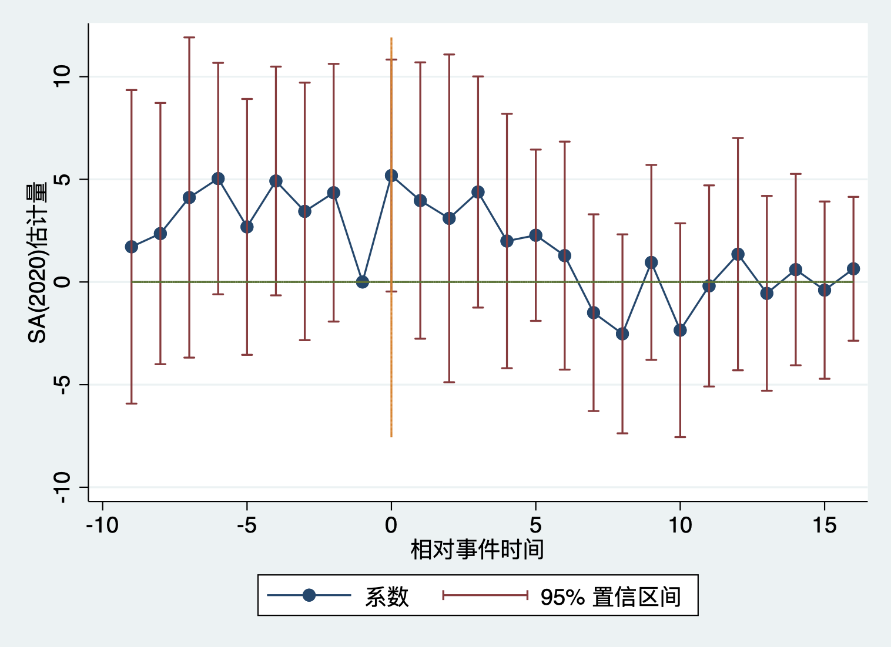
从图11.9可以看出，经过修正的TWFE事件研究估计量虽然在单边离婚法案实施前，单期系数均不显著，但是在法案实施后，系数在95%置信水平下也不显著。这可能表明，在政策交叠采用情形下，由于不满足处理效应同质性假设，所以11.3节的TWFE事件研究结果并不可信，用Sun & Abraham(2020)的稳健事件研究估计量得到的结果显示，没有统计证据表明单边离婚法案的实施会减少女性自杀。
不可观测混淆因子的假设
除了上述异质性处理效应可能会给传统TWFE事件研究估计量带来偏误外，在事件研究中还有一些更一般性的处理变量内生性问题，例如，混淆因子，尤其是不可观测的混淆因子造成地处理变量内生性，即使在DID事件研究中，也要特别注意这类问题。下面，我们就来看看关于不可观测混淆因子的识别假设，及其对应的经济、社会、制度、文化等含义，并讨论由此带来的处理效应偏误和一些基本的解决方法。
我们可以把上文的面板事件研究模型写成如下形式来包含不可观测的混淆因子：
\[\begin{equation} Y_{it}=\alpha_i+\lambda_t+\sum_{m=-G}^M \beta_m D_{i,t-m}+ X_{it}\Gamma + C_{i,t} +\epsilon_{it} \end{equation}\]
其中，\(Y、D、X\)与上文含义一致，M表示处理前或政策实施前最大的时期数，G表示处理后最大的时期。在上述面板事件研究设定中包含了一个不可观测的混淆因子向量\(C_{i,t}\)——它们与处理变量/政策相关，又影响结果变量。如果我们在事件研究中忽略了这些混淆因子，那么，处理变量就存在内生性问题。即使我们不能拒绝处理前趋势假设，这也并不意味着面板事件研究不存在混淆因子。如果忽略了这些重要的不可观测混淆因子，所有的估计处理效应可能都是由这些混淆因子驱动的（Frevaldenhoven et al., 2021）。
一般来说，混淆因子\(C_{i,t}\)是不可观测的，因此，要干净地识别出处理效应\(\beta\)就必须依赖于对混淆因子施加的假设。Frevaldenhoven et al.（2021）、Liu et al.(2021)均将混淆因子\(C_{i,t}\)进行了分解，本节参照Frevaldenhoven et al.（2021）的分解方法，将混淆因子\(C_{i,t}\)分解成一个低维度时变因子集合与个体相关的因子系数（注：在Bai（2009）的交互固定效应模型中，将该系数称为因子载荷）的乘积部分和一个异质性的部分，可用下列式子表示：
\[C_{i,t}=\mu_i^{'}F_t+\xi \eta_{it}\]
将上式带入（11.17），得到：
\[\begin{equation} Y_{it}=\alpha_i+\lambda_t+\sum_{m=-G}^M \beta_m D_{i,t-m}+ X_{it}\Gamma +\mu_i^{'}F_t+\xi \eta_{it} +\epsilon_{it} \end{equation}\]
其中，\(F_t\)是一个低维度不可观测的时变因子集合，且带有个体特征的因子载荷\(\mu_i\)，而\(\eta_{it}\)则表示未知的标量，系数为\(\xi\)。
在这种情况下，由于\(F_t\)和\(\eta_{it}\)都是不可观测的，而要干净地识别出\(\beta\)就必须依赖于对\(F_t\)和\(\eta_{it}\)施加一些限制或假设。由于\(F_t\)和\(\eta_{it}\)没有数据，通常要从经济、制度等背景入手来讨论这些限制/假设是否成立。下面就来看看这些假设
假设1：\(\xi=0\)，
\[C_{i,t}=\mu_i^{'}F_t\]
且下列条件之一成立：
（a)所有时期的\(F_t=0\)。
(b) \(F_t=f(t)\)，其中，\(f()\)是一些低维度基础函数集合。
(c) \(F_t\)未知，且其维度较小9。
假设(1a)可能是我们最熟悉的，即如果\(C_{i,t}=0\)，那么，可以使用传统的TWFE事件研究来识别出\(\beta\)。这个时候，干扰\(\beta\)的大部分混淆因子都来源于可观测的控制变量\(X_{i,t}\)和隐变量\(\alpha_i\)、\(\lambda_t\)——个体固定效应和时间固定效应。例如，个体固定效应\(\alpha_i\)可能代表了个体性格、地区文化/地理因素的效应，因此，假设(1a)就意味着这些因素会影响单个个体/地区，且效应不随时间不变，这就排除了那些个体层面随时间变化的因素，例如个体的经验、地区经济结构等等。再例如，时间固定效应\(\lambda_t\)可能代表了宏观经济冲击或全国层面的政策的效应，因此，假设(1a)就意味着这些因素会以相同的方式影响所有个体/地区，这也就排除了那些依赖于个体特征或地区政策的宏观经济因素的影响。
而假设(1b)一般化了假设(1a)，因为\(f(t)\)是一系列关于时间的基础函数集合，因此，它即可以包含\(f(t)=0\)，更一般的情形下，研究者们会选择采用多项式的形式来表示\(f()\)，例如，线性时间趋势\(f(t)=t\)，或者二次型时间趋势\(f(t)=t+t^2\)等等。这时，我们假设时变混淆因子是具有个体特征\(\mu_i\)的确定性时间趋势，也就是说，这类混淆因子对个体/地区的影响不同，但效应在时间维度上具有确定的趋势。如果我们选择假设(1b)，那么，我们需要基于经济制度背景详细地说明，为什么这种个体异质性的确定时间趋势可以较好地近似我们想要考察混淆因子\(C_{i,t}=0\)。例如，线性时间趋势\(f(t)=t\)可能在短期（短面板情形）内比长期能更好地近似混淆因子，因为在长期内，可能经济趋势会发生变化（潜在产出、平衡增长路径的变化等），因此，线性趋势不可信。再例如，我经常给学生们举例说，当个“教书匠”挺好的，不说时间自由，收入也基本会随时间不断增长，因此，只要努力静心做研究、教学，随着研究水平的提高，收入会不断的提高，甚至呈现“J”型的非线性时间趋势变化，但每个老师的情况又有些差异。这个时候，我们可能就要考虑使用递增型多项式的时间趋势\(f()\)。而一般行业的劳动者可能会随着年龄增长，由于边际生产率递减规律，其收入趋势可能是先上升后下降的变化趋势，因此，采用的时间趋势函数为\(f(t)=t-t^2\)。总之，如果我们通过经济背景说明了假设(1b)具有可信性，那么，就可以使用带有时间趋势的TWFE事件研究设计来识别出处理效应\(\beta\)。
假设(1c)与假设(1b)的不同之处在于，假设(1c)并不要求时变混淆因子\(F_t\)函数形式已知。通常，\(F_t\)是从数据中推断或近似，因此，假设(1c)要求样本具有较大的截面数量N和时间长度T，并且要求\(\frac{1}{N}\sum_i^N \mu_i \mu_i'\)是正定矩阵(Bai,2009)。正定条件意味着这些混淆因子应该广泛地与许多个体存在着重要的联系。因此，假设(1c)可能更适用的情形是，当不可观测的混淆因子来源于宏观经济因素（例如，“双碳”政策冲击），这些冲击影响所有的个体，但影响程度不同。如果我们感兴趣的政策是基于个体/区域性因素——与宏观冲击不太相关时，那么，就不太适用 假设(1c)。
当我们通过经济背景的阐述，说明了假设(1c)可能成立时，我们就可以使用共同相关效应（common correlated effect）（Pesaran,2006）、交互固定效应（interactive fixed effect）（Bai，2009）、矩阵完成法（Matrix Completion）(Athey et al.， 2021)来估计出\(\beta\)。还有一些学者使用合成控制法来估计\(\beta\)。
共同相关效应（common correlated effect）（Pesaran,2006）的stata命令为\(xtdcce2\)。Liu et al.(2021)写的stata包\(fect\)可以用交互固定效应（interactive fixed effect）（Bai，2009）和矩阵完成法（Matrix Completion）(Athey et al.， 2021)10来得到事件研究估计量。下面，我们来简要介绍一下fect命令的用法。
* 安装fect包，注意这个包依赖于reghdfe包，因此，使用前务必也安装reghdfe，安装方式见前面内容
cap ado uninstall fect
net install fect, from(https://raw.githubusercontent.com/xuyiqing/fect_stata/master/) replace
下面使用fect包自带的数据集simdata1来说明fect的用法，且是交叠采用的处理分配机制，包含100个处理个体，100个控制组个体，35期。处理以交叠的方式从21期开始。\(Y_{it}\)表示结果变量，\(D_{it}\)表示处理变量，\(X_1\)、\(X_2\)表示可观测的协变量。
* fect包在事件研究11.4.2中的应用
clear
set more off
use "/Users/xuwenli/Library/CloudStorage/OneDrive-个人/DSGE建模及软件编程/教学大纲与讲稿/应用计量经济学讲稿/应用计量经济学讲稿与code/DID与SC/dofile_data/simdata1",clear
reghdfe Y D,a(id time) vce(cluster id)
reghdfe Y D X1 X2,a(id time) vce(cluster id)
首先，利用simdata1估计下列TWFE模型：
\[\begin{equation} Y_{it}=\alpha_i+\lambda_t+D_{i,t}+ \gamma_1 X_{1,it}+\gamma_2X_{2,it} +\epsilon_{it} \end{equation}\]
得到的TWFE估计量如下表11.3所示：
下面，我们看看数据的事件研究图。估计的面板事件研究模型：
\[\begin{equation} Y_{it}=\alpha_i+\lambda_t+\sum_{m=-G}^M \beta_m D_{i,t-m}+ X_{it}\Gamma +\epsilon_{it} \end{equation}\]
其中，可观测的控制变量\(X_{it}\)包含\(X_1\)、\(X_2\)。
* 定义相对事件时间
cap drop treated_time tag sumtag year0
bys id (time):egen treated_time = min(time) if D==1 // 初次处理时点
* 提取变量的第一个非缺失值
egen tag = tag(id treated_time) if treated_time!=.
bysort id: gen sumtag = sum(tag)
replace sumtag=. if treated_time==.
bysort id: egen year0 = min(sumtag*time)
* 定义相对事件时间
gen event_to_time = time - year0
replace event_to_time = 0 if missing(year0)
* 声明面板数据
xtset id time
* 事件研究图
eventdd Y i.time, timevar(event_to_time) method(fe, cluster(id)) graph_op(ytitle("处理效应") xlabel(-31(5)15))
eventdd Y X1 X2 i.time, timevar(event_to_time) method(fe, cluster(id)) graph_op(ytitle("处理效应") xtitle("相对事件时间") legend(order(1 "点估计量" 2 "95%置信区间")) xlabel(-31(5)15))
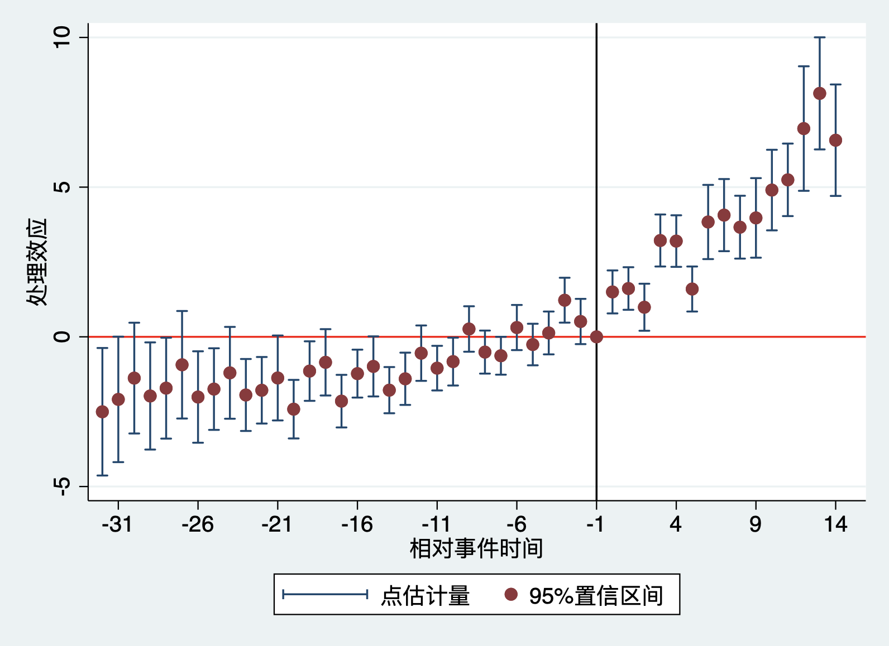
从事件研究图11.10可以看出，虽然处理后的效应在95%置信水平下显著，但是，处理发生前，大部分时期的系数在95%置信水平下不显著，这说明在处理前，处理组和控制组结果结果变量变化趋势具有显著差异，也就是说处理前并不满足平行趋势假设。而且，从TWFE事件研究估计量可以明显看出，从处理前时期开始，处理效应就存在明显地上升趋势。这可能意味着TWFE事件研究估计量存在偏误。
如果我们通过分析经济制度或背景判断出来，上述传统TWFE事件研究声明中可能遗漏了一些不可观测的宏观混淆因子，例如会影响所有个体，但对每个个体的影响程度存在异质性，也就是说，上述假设1(c)可能成立，我们遗漏了不观测的时变混淆因子\(F_t\)。遗漏它们可能导致违反了”严格外生性假设“，因此，TWFE事件研究估计量有偏，例如存在处理前趋势等等。如上文所述，我们可以估计下列面板事件研究模型：
\[\begin{equation} Y_{it}=\alpha_i+\lambda_t+\sum_{m=-G}^M \beta_m D_{i,t-m}+ X_{it}\Gamma + \mu_i^{'}F_t+\epsilon_{it} \end{equation}\]
其中，可观测的控制变量\(X_{it}\)包含\(X_1\)、\(X_2\)，\(F_t\)表示会影响所有（大部分）个体的宏观混淆因子，且它的函数形式未知，但对个体的影响程度存在异质性\(\mu_i^{'}\)。
根据Frevaldenhoven et al.（2021）、Liu et al.(2021)，可以用交互固定效应（interactive fixed effect）（Bai，2009）和矩阵完成法（Matrix Completion）(Athey et al.， 2021)来重新估计面板事件研究模型。
* 交互固定效应和矩阵完成法
*（1）TWFE估计量
fect Y, treat(D) unit(id) time(time) cov(X1 X2) method("fe") force("two-way") se vartype(jackknife) xlabel("相对事件时间") ylabel("平均处理效应") title("TWFE估计量和jackknife标准误")
fect Y, treat(D) unit(id) time(time) cov(X1 X2) method("fe") force("two-way") se nboots(100) xlabel("相对事件时间") ylabel("平均处理效应") title("TWFE估计量和bootstrap标准误")
*（2）交互固定效应ife
fect Y, treat(D) unit(id) time(time) cov(X1 X2) method("ife") force("two-way") se vartype(jackknife) xlabel("相对事件时间") ylabel("平均处理效应") title("TWFE估计量和jackknife标准误")
fect Y, treat(D) unit(id) time(time) cov(X1 X2) method("ife") force("two-way") se nboots(100) xlabel("相对事件时间") ylabel("平均处理效应") title("TWFE估计量和bootstrap标准误")
利用交互固定效应来表示不可观测的混淆因子\(\mu_i^{'}F_t\)，由此得到的事件研究图11.11:
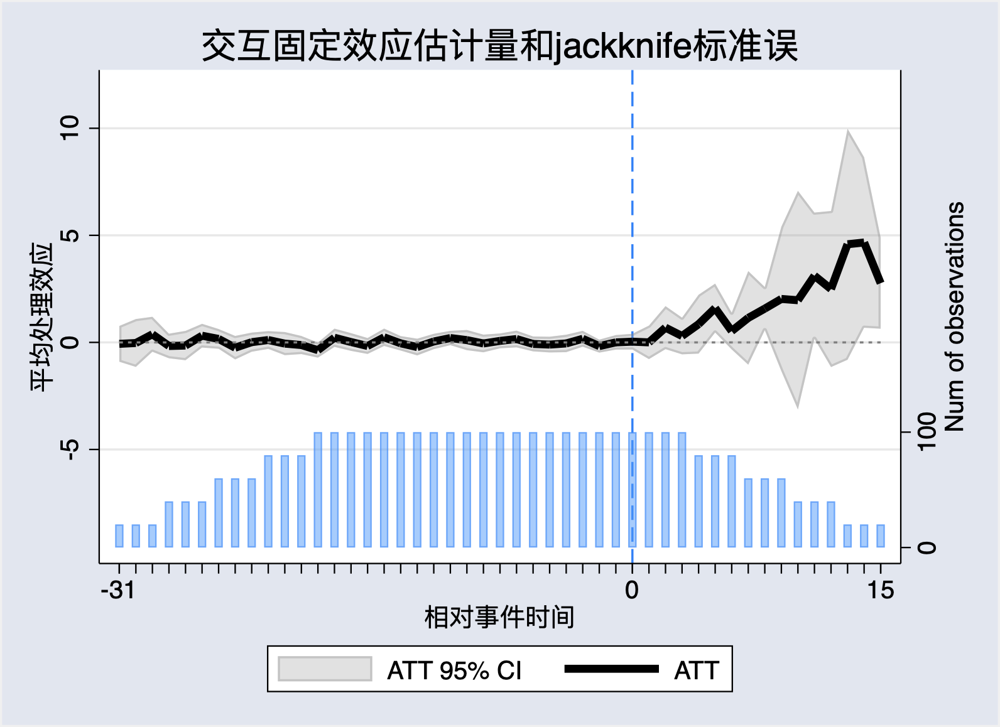
矩阵完成（MC）法最大的优势在于不用数据明确地估计\(\mu_i^{'}\)和\(F_t\)。而是将它们作为一个整体\(\mathbf{C_{it}}=\mu_i^{'}F_t\)，并直接通过解下列最小化问题来估计\(\mathbf{C_{it}}\):
\[\begin{equation} \widehat{\mathbf{C}}=\underset{\mathbf{C}}{\arg \min }\left[\sum_{(i, t) \in \mathcal{O}} \frac{\left(Y_{i t}-C_{i t}\right)^{2}}{|\mathcal{O}|}+\lambda_{C}\|\mathbf{C}\|\right] \end{equation}\]
其中，\(\mathcal{O}=\{(i,t) | D_{it}=0\}\)，\(\|\mathbf{C}\|\)是\(\mathbf{C_{it}}\)矩阵模，\(\lambda_C\)表示调节参数。Athey et al.(2021)提出了一种迭代算法来获得\(widehat{\mathbf{C}}\)，并显示\(\widehat{\mathbf{C}}\)是\(\mathbf{C}\)的渐进无偏估计量。因此，下面用MC方法估计面板事件研究模型：
\[\begin{equation} Y_{it}=\alpha_i+\lambda_t+\sum_{m=-G}^M \beta_m D_{i,t-m}+ X_{it}\Gamma + \mathbf{C}_{it}+\epsilon_{it} \end{equation}\]
*（3）矩阵完成法mc
fect Y, treat(D) unit(id) time(time) cov(X1 X2) method("mc") lambda(0.004) se vartype(jackknife) xlabel("相对事件时间") ylabel("平均处理效应") title("TWFE估计量和jackknife标准误")
fect Y, treat(D) unit(id) time(time) cov(X1 X2) method("mc") lambda(0.004) se nboots(100) xlabel("相对事件时间") ylabel("平均处理效应") title("TWFE估计量和bootstrap标准误")
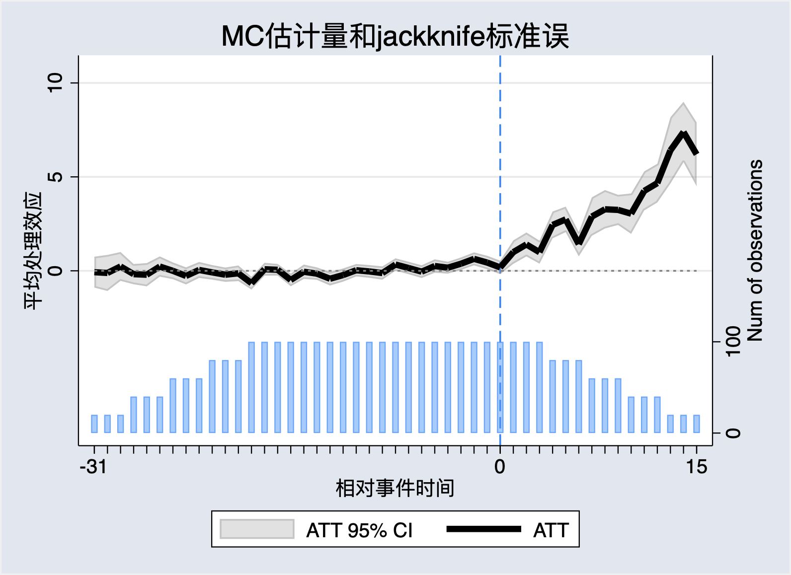
假设2：\(F_t=0\) 且混淆因子遵循
\[\begin{equation} C_{it}=\alpha_i +\gamma_t+q_{it}^{'}\psi+\sum_m \phi f(m)z_{i,t-m} \end{equation}\]
其中，\(f(m)\)是已知的低维度基础函数。从直觉上看，没有预期效应的交叠情形下，假设\(m \in [-4,4], f(m)=1\)，否则等于0。也就是说，结果变量从政策采用前4期凯斯具有一个线性时间趋势，且会持续到政策实施后4期。因为在没有预期效应时，处理前不存在政策效应，所以处理前m期，结果变量的趋势是由上述混淆因子\(C_{it}\)引起，那么，我们就可以外推这个线性趋势到政策实施后m期，从而控制混淆因子引起的变化趋势对处理效应的干扰。换言之，在没有预期效应时，在政策实施之前m期内，政策与结果之间的任何处理效应仅仅只是由于混淆因子引起的，因此，我们可以利用事件之前m期来估计出参数\(\phi\)。只要我们知道了\(\phi\)，就很容易将这个反事实外推到政策实施后的时期。需要强调的是，这个假设——混淆因子引起的线性趋势会持续到事件发生之后——不可检验，因此，我们需要根据经济背景、特征、理论、常识等等来阐述这个假设的合理性。
在上文的英超足球队换教练的例子中，可以明显看出，在换教练之前，球队的成绩一再下降。例如，在赛季之初，球队管理层、球迷和教练组球员们对球队信心满满，经过几场比赛之后，球队战绩不理想，在积分榜上靠后，主教练各种打气鼓舞士气，可是接下来几场比赛还是表现不佳，积分排名进一步下滑。球迷们开始不满，抱怨“what are you弄啥呢”，球员们比赛士气、状态一落千丈，继续输掉比赛。终于球迷们开始高喊“主教练下课”，管理层就更换了教练，但是，新教练走马上任人生地不熟的，球队的技战术、球员的状态并没有那么快适应新教练，最可能出现的情形就是，换教练后的几场比赛（例如，4场比赛）球队正在熟悉适应新的技战术，找状态的过程，因此，换教练前的心态和状态都延续到了换教练后的4场比赛，球队战绩多多少少包含了这些趋势。但是这个趋势并不是新教练带来的效应，而是延续了之前的趋势，那么，我们在识别更换教练的效应时，应该也要控制住这种趋势。假设我们知道球员的状态因素遵循上述（11.24）式的结构，我们就可以从更换教练前的4场比赛的相关数据中估计出混淆因子引起的比赛得分的线性趋势，据此，我们可以将混淆因子的事件时间路径外推到更换教练后的时期，并同时得到结果变量的事件时间趋势，最终估计的处理效应应该是剔除这个趋势。下面来看看更换教练的战绩效应的事件时间路径，如图11.13所示。
* create treatment variable
cap drop D
gen D=0
replace D=1 if t_event>0 & t_event!=.
* TWFE
reghdfe points D,absorb(i.teamseason i.gameno) vce(cluster teamseason)
* EVENT TIME
cap drop temp* t_event1
gen temp1 = gameno if D==1
egen temp2 = min(temp1), by(team season )
gen t_event1 = gameno-temp2
lab var t_event1 "Intervention event study time (to -1 before, from +1 after)"
* Event study plot
xtevent points, panelvar(teamseason) timevar(gameno) policyvar(D) window(12)
xteventplot,nosupt
xtevent points, panelvar(teamseason) timevar(gameno) policyvar(D) window(12) trend(-4)
xteventplot,overlay(trend) nosupt
xteventplot,nosupt
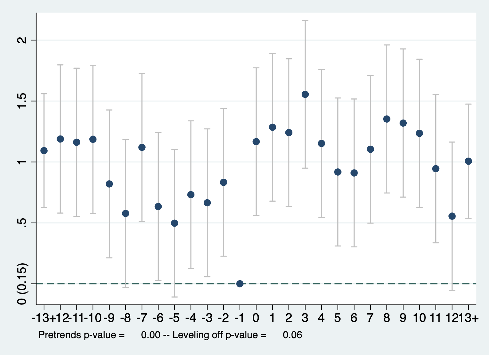
根据上文的分析，球队的状态和成绩趋势会延续到换教练后的几场比赛。图11.14显示了从换教练前4场比赛的得分趋势来外推出混淆因子。图11.15则据此混淆因子来调整结果变量的变化路径，从而识别出换教练对球队成绩的效应。
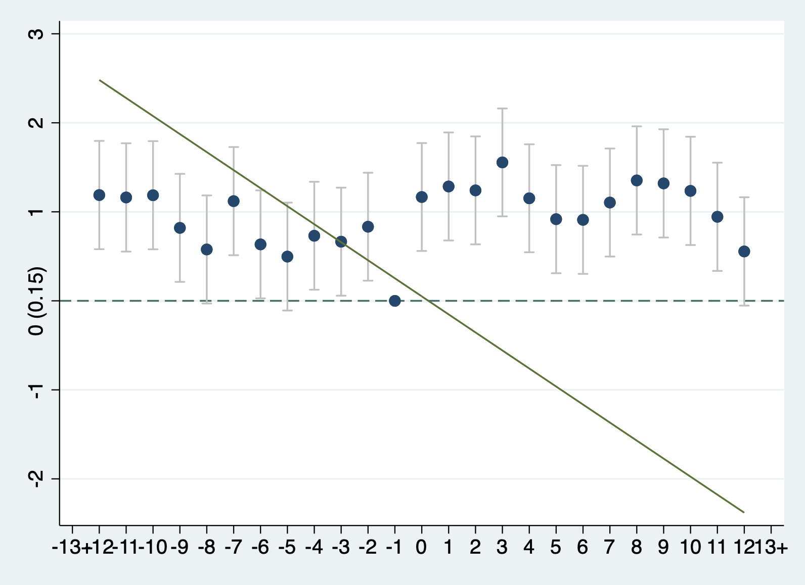
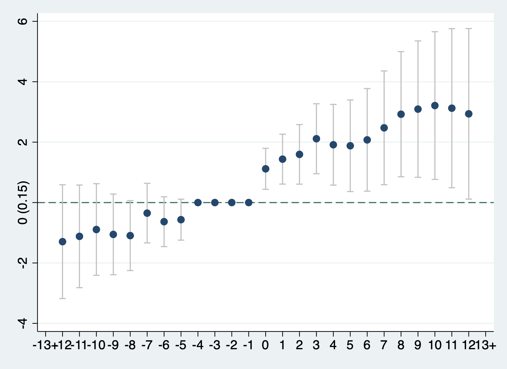
Freyaldenhoven et al.(2022,forthcoming)比较了假设2和假设1(b)的经济含义。例如，在Dobkin et al.(2018)的研究中，结果变量\(Y_{it}\)表示个体信用得分，政策\(z_{it}\)是个体住院的二值型虚拟变量。混淆因子\(C_{it}\)可能反映出了个体健康状况，它既会影响个体住院，也会影响其信用得分。在这个例子中，如果我们认为假设1(b)成立，即\(C_{it}=\lambda_i t\)，这就意味着我们认为每个人的健康变化都遵循一个确定性的线性时间趋势，且每个人的变化又具有差异。如果我们认为假设2成立，即\(C_{it}=\phi (t-t_i^*)\)，其中，\(t_i^*\)表示个体住院的时间，这就意味着我们假设每个人的健康状况都会相对于住院时间而变化，且每个人的健康率相同。此外，如果个体健康状态只在住院前后一段时期之内存在趋势，例如，当\(t-t_i^*>3\)时，\(C_{it}=3\phi\)，当 \(t-t_i^*<3\)时，\(C_{it}=-3\phi\)，当\(-3\le t-t_i^*\le 3\)时，\(\phi (t-t_i^*)\)，即每个个体只在住院前后3期内才具有相同的健康演化趋势，超过这段时期则没有趋势。
假设3:政策的工具变量
如果我们有政策的工具变量，正如第七章的工具变量法，可以使用两阶段最小二乘估计处理效应。因为工具变量的性质就是与政策变量相关，与混淆因子无关。
假设4:混淆因子的代理变量
如果我们有混淆因子的代理变量，那么，这时有两种情形：
(1) 有一个代理变量，且代理变量的误差与政策变量不相关，混淆因子对政策变量领先、滞后期、控制变量、个体和时间固定效应的回归系数中，有一些系数非零。利用xtevent包里的自带数据来看看这个方法。
use "/Users/xuwenli/Library/CloudStorage/OneDrive-个人/DSGE建模及软件编程/教学大纲与讲稿/应用计量经济学讲稿/应用计量经济学讲稿与code/data/example31.dta",clear xtevent y,policy(z) proxy(x) window(5) xteventplot,y xteventplot,overlay(iv) xteventplot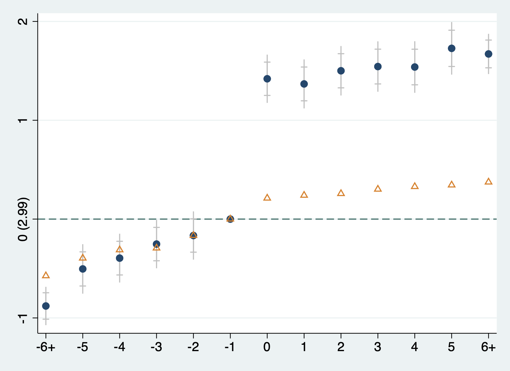
混淆因素的代理变量 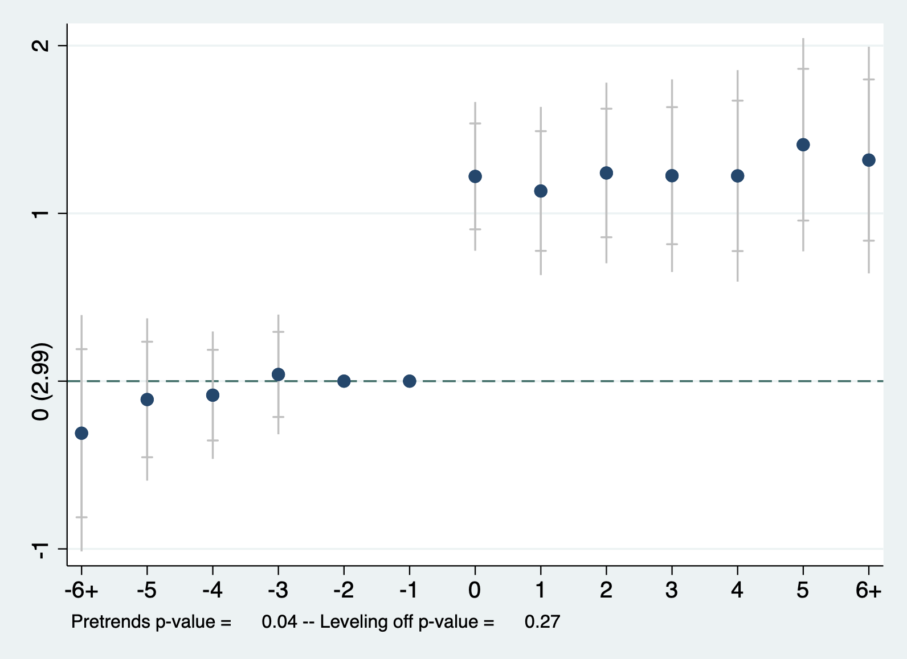
控制混淆因子后的处理效应 (2) 有两个代理变量，且代理变量的误差之间不相关，这个时候可以在回归中加一个代理变量，然后用另一个代理变量作为第一个代理变量的工具变量。
异质性处理效应与混淆因子共存
在面板事件研究设计的最新进展方面，大部分研究要么只关注异质性处理效应，要么只关注混淆因子。Freyaldenhoven et al.(2022,forthcoming)就指出，将两者结合起来，并提出相应的稳健估计量可能是未来的重要研究方向之一。
目前，也有一些学者同时考虑了两个方面的问题，例如，合成DID（Arkhangelsky et al. ,2021）、交互固定效应反事实估计量（Xu, 2017; Liu et al., 2022）、矩阵完成法（Athey et al., 2021; Liu et al., 2022）等。下面，我们来介绍一下这些估计量及其应用。
例子来源于Clarke and Pailanir的案例文档（参见其github）。
该例子使我们熟悉的“99控烟法案”，参见第十章合成控制法相关章节内容，这个例子也是Arkhangelsky et al., (2021，AER)的案例。该数据有单一的处理地区——加州，该州在1989年实施了控烟政策。
* 从github上加载数据
global link "https://raw.githubusercontent.com/synth-inference/synthdid/"
import delimited "$link/master/data/california_prop99.csv", clear delim(";")
sdid packspercapita state year treated, vce(placebo) seed(123) reps(50) ///
graph graph_export(sdid_, .eps) g1_opt(xtitle(""))
正如上述结果可知，控烟法案的处理效应为-15.6，且标准误为6.6，在99%置信水平下显著。
时间序列事件研究
事件研究：反事实预测
前面的内容要么采用截面数据来估计效应，要么使用面板数据来估计效应，本讲个下一讲使用另一种数据类型——时间序列数据——来估计效应。
正因为事件研究在许多领域都有广泛地应用，因此，在不同的学科领域，一些术语也有所差异。例如，在卫生健康领域，我们可能经常看见“统计过程控制（statistical process control）”。在经济学领域，一般统称为“事件研究”。
在金融领域，事件研究是最流行的方法之一。一个事件是否会影响到公司股票收益率？如何影响？例如，2015年8月10号，全球搜索引擎巨头——Google公司宣布更名为“Alphabet”（其实，谷歌在创立之处也并非名叫谷歌，而是叫“网络爬虫（backrup）”——一个十分耿直的程序猿名字，随着业务规模的扩大，公司创始人注册了谷歌这个域名）。好了，我们回到谷歌更名为“Alphabet”这个事件。这个事件是否会影响到谷歌在纳斯达克的股票收益率呢？
下面，我们利用2015年5月到8月底的谷歌股票价格的数据来说明上述问题的答案。此外，数据还包括标普500指数以反应市场状况。数据来源于Nick Huntington-Klein的《The Effect》第17章。首先，我们画出谷歌股票的收益率和标普500的收益率曲线，如图11.1所示。
******************************
* 谷歌更名事件
******************************
use /Users/xuwenli/OneDrive/DSGE建模及软件编程/教学大纲与讲稿/应用计量经济学讲稿/应用计量经济学讲稿与code/data/mixtape/google_stock.dta, replace
tsset date
twoway (tsline google_return)(tsline sp500_return) ///
, ///
tline(10aug2015) ///
legend(order(1 "谷歌日收益率" 2 "标普500日收益率"))
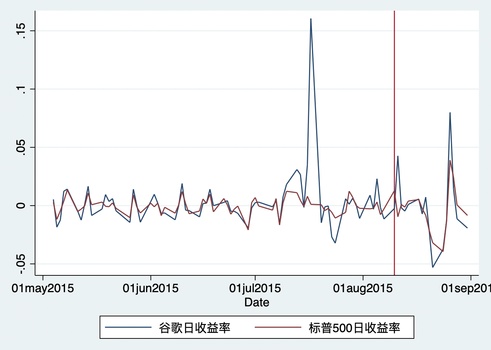
从图中，我们可以看到，谷歌股票的收益与标普500指数的收益率的变动趋势基本一致。这样我们就可以用大盘指数收益率来控制市场因素，从而看到谷歌股票收益超出大盘收益率的部分等异常波动可能就是由于某些特定的时间引起的。我们用谷歌更名事件来说明一下“事件研究”。
首先，从样本中挑出估计期和观测期。对于估计来说，从2015年5月到7月。对于观测期，从谷歌宣布更名的前几天开始，即8月6日到24日。然后，用观测期的数据来构建预测模型，并将预测结果用来比较。stata代码如下：
* 得到估计期的平均收益率，然后计算异常收益率（AR，abnormal return）：
summ google_return if date <= date("2015-07-31","YMD")
gen AR_mean = google_return -r(mean)
* 计算谷歌和大盘收益率的差异
gen AR_market = google_return - sp500_return
* 用大盘收益率来估计模型，预测谷歌股票的收益率
reg google_return sp500_return if date <= date("2015-07-31","YMD")
* 得到异常收益风险（AR_risk）的预测值
predict risk_predict
gen AR_risk = google_return - risk_predict
* 画出观测期的结果
gen obs = date >= date("2015-08-06","YMD") & date <= date("2015-08-24","YMD")
format date %td
* 画出时间序列数据的图
tsset date
twoway (tsline AR_risk)(tsline AR_market)(tsline AR_mean) if obs, tline(10aug2015)
从图11.2可以看出，在2015年8月10号后，谷歌股票价格确实出现了一个交易日的大涨。我们也可以预期到，在有效股票市场上，谷歌更名事件会迅速太高谷歌股票价格，然后日度收益率有逐渐回到正常水平（0附近）。而且，我们也并没有在更名前观察到其它的变动，这说明股票收益率的变化并没有被市场所预期到。但是，我们把时间拉长一些，看看8月20号左右的谷歌股票收益率的均值线发生了一次大跳水，即跌了大概5个百分点，这个时候可能就不是更名事件产生的效应了，因为我们可以从股票市场的收益率也可以看到出现了下跌的情形，也就是说，整个市场可能都出现了下跌。这意味着，我们在使用“事件研究”方法时，可能不能观测太长期的效应，而要使用一个相对较短的事件窗口来得到事件的效应。尤其是对于金融市场这种高频数据来说，一天可能就是非常长期了，更别说几十个交易日的窗口。
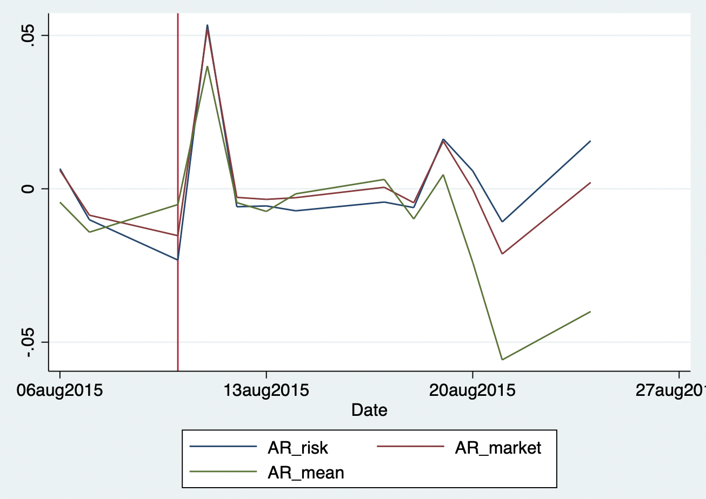
除了看图说话之外，我们还可以利用stata程序包来检验这些事件对于股票收益率的影响。常用的stata程序包有Zhang et al.(2013)编写的eventstudy和Kaspereit(2015)编写的eventstudy2命令包。本讲稿中使用的是F. Pacicco, L. Vena, and A. Venegoni（2018，“Event study estimations using Stata”）介绍的estudy命令，这个命令改进了上述两个时间序列的事件研究命令：
同时计算多个变量的异常收益率等；
为不同加总层面、单个公司事件的异常收益率计算、统计检验提供了工具；
根据用户需要，自定义输入结果；
简化了方法
下面，我们用estudy命令来估计一下google更名事件对股票收益率和股票市场收益率的效应。
* 加载estudy程序包
ssc install estudy,replace
* 查看estudy语法格式，请help estudy
estudy google_return sp500_return, ///
datevar(date) evdate(08102015) dateformat(MDY) ///
indexlist(sp500_return) lb1(-4) ub1(1)
谷歌宣布更名发生在2015年8月10号，因此，在evdate后面声明这个事件的日期，且日期格式dateformat是“月日年”。且正如上文所示，在金融市场中进行事件研究时，我们最好选取一个较短的事件窗口期，因此，我们设定的事件窗口期是2015年8月6日-11日，也就是事件发生日期的前4个交易日（lb(-4)）和后一个交易日(ub(1))。得到如下结果：
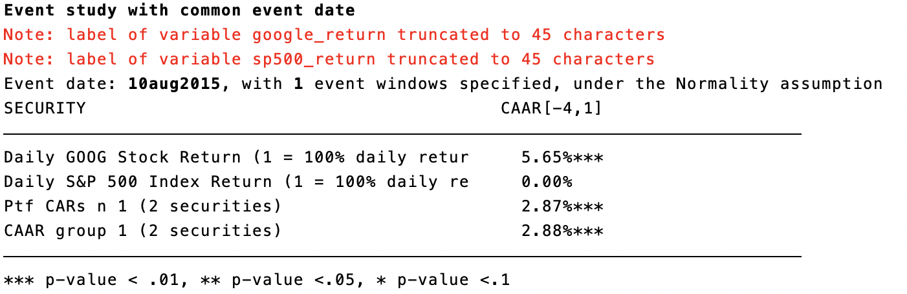
我们并没有声明估计窗口，因此，estudy命令默认的估计窗口是从样本期内的第一个交易数据开始到事件日期前30个交易日为止。上述结果给出了事件日期，声明的事件窗口数和实施的诊断检验。表格的第一列是变量的标签信息，第二列是计算得到的异常收益率，上例的结果计算的是累积平均异常收益率（CAAR），并且还标注了统计显著性，例如，google更名事件导致了谷歌股票收益率在事件窗口期提高了5.65%，且在1%的置信水平下显著。而谷歌更名事件对于整个标普500指数的收益率则没有显著的影响。此外，在多个股票收益率的情形下，estudy会在结果的最后两行给出资产组合方法和组群异常收益率的结果，它们对于评价事件的平均影响很有帮助。
那么，事件研究的想法很简单，事件发生了，处理就开始产生作用。然后，我们比较事件前后，得到处理的效应。我们如何确保在事件发生后，唯一变化就是处理本身，而不是其它的因素引起的结果变量发生变化呢？从本讲稿的前面内容可能大家已经有所感觉，我们要想尽办法来预测得到一个反事实的变化。例如，假设如果不发生处理，那么，结果变量也会沿着处理前的趋势发生变化，那么，我们就可以利用事件发生前的信息来预测/构造一个反事实的预测值/对照组，然后比较处理后的实际变化与预测值，它们的差异就是事件的效应。